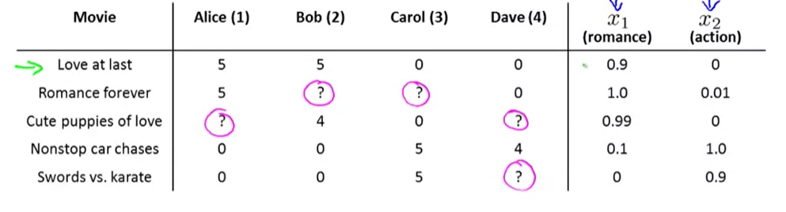

不喜欢学习数学英语而产生的眼高手低的典范
# Coursera 部分# definition
Field of study that gives computers the ability to learn without being explicitly programmed Arthur Samuel(1959)
A computer program is said to learn from experience E with respect to some task T and some performance measure P, if its performance on T, as measured by P, improves with experience E. Tom Mitchell
# Supervised learning(teach the machine to do sth)
the “right answers” data sets are given
regression (回归) problem (predict continuous value)classification problem (discrete valued output(0 or 1 or 2,…))can predict according to infinite features
# Notations:
m=Number of training examples
x’s=“input” variable/features
y’s=“output” variable/features
(x,y)=one training example
( x ( i ) , y ( i ) ) = t h e i t h t r a i n i n g e x a m p l e (x^{(i)},y^{(i)})=the\quad i^{th}\quad training\quad example
( x ( i ) , y ( i ) ) = t h e i t h t r a i n i n g e x a m p l e
h=hypothesis, mapping from x’s to y’s
e g . h θ ( x ) = θ 0 + θ 1 x ( u n i v a r i a b l e l i n e a r r e g r e s s i o n ) eg.h_\theta(x)=\theta_0+\theta_1x\quad(univariable\quad linear\quad regression)
e g . h θ ( x ) = θ 0 + θ 1 x ( u n i v a r i a b l e l i n e a r r e g r e s s i o n )
# Univariable linear regression
G o a l : t o m i n i m i z e θ 0 , θ 1 J ( θ 0 , θ 1 ) , w h e r e J ( θ 0 , θ 1 ) = 1 2 m ∑ i = 1 m ( h θ ( x ( i ) ) − y ( i ) ) 2 ( c o s t f u n c t i o n ) Goal:to\quad minimize_{\theta_0,\theta_1}J(\theta_0,\theta_1),\\
where\quad J(\theta_0,\theta_1)=\frac{1}{2m}\sum_{i=1}^m(h_\theta(x^{(i)})-y^{(i)})^2(cost\quad function)\\
G o a l : t o m i n i m i z e θ 0 , θ 1 J ( θ 0 , θ 1 ) , w h e r e J ( θ 0 , θ 1 ) = 2 m 1 i = 1 ∑ m ( h θ ( x ( i ) ) − y ( i ) ) 2 ( c o s t f u n c t i o n )
J is called cost function squared error cost function
squared error cost function is the most used function for linear regression problem and works pretty well
# Gradient descent
to minimize function J
Outline:
S t a r t w i t h s o m e θ 0 , θ 1 Start\quad with\quad some\quad \theta_0,\theta_1
S t a r t w i t h s o m e θ 0 , θ 1
k e e p c h a n g i n g θ 0 , θ 1 t o r e d u c e J ( θ 0 , θ 1 ) keep\quad changing\quad \theta_0,\theta_1\quad to\quad reduce\quad J(\theta_0,\theta_1)
k e e p c h a n g i n g θ 0 , θ 1 t o r e d u c e J ( θ 0 , θ 1 )
until we hopefully end up at a minimum
r e p e a t u n t i l c o n v e r g e n c e { θ 0 ′ = θ 0 − α ∂ ∂ θ 0 J ( θ 0 , θ 1 ) θ 1 ′ = θ 1 − α ∂ ∂ θ 1 J ( θ 0 , θ 1 ) } α i s c a l l e d l e a r n i n g r a t e repeat\quad until\quad convergence\{\\
\theta_0'=\theta_0-\alpha\frac{\partial}{\partial\theta_0}J(\theta_0,\theta_1)\\
\theta_1'=\theta_1-\alpha\frac{\partial}{\partial\theta_1}J(\theta_0,\theta_1)\\
\}\\
\alpha \ is\; called\;learning\; rate
r e p e a t u n t i l c o n v e r g e n c e { θ 0 ′ = θ 0 − α ∂ θ 0 ∂ J ( θ 0 , θ 1 ) θ 1 ′ = θ 1 − α ∂ θ 1 ∂ J ( θ 0 , θ 1 ) } α i s c a l l e d l e a r n i n g r a t e
Noticing that theta0 and theta1 are simultaneously updated
∂ ∂ θ 0 = 1 m ∑ i = 1 m ( h θ ( x ( i ) ) − y ( i ) ) ∂ ∂ θ 1 = 1 m ∑ i = 1 m ( h θ ( x ( i ) ) − y ( i ) ) ⋅ x ( i ) \frac{\partial}{\partial\theta_0}=\frac{1}{m}\sum_{i=1}^m(h_\theta(x^{(i)})-y^{(i)})\\
\frac{\partial}{\partial\theta_1}=\frac{1}{m}\sum_{i=1}^{m}(h_\theta(x^{(i)})-y^{(i)})\cdot x^{(i)}
∂ θ 0 ∂ = m 1 i = 1 ∑ m ( h θ ( x ( i ) ) − y ( i ) ) ∂ θ 1 ∂ = m 1 i = 1 ∑ m ( h θ ( x ( i ) ) − y ( i ) ) ⋅ x ( i )
univariable linear regression is a convex function (a bowl shape function ), so it has no local optima other than the global optimum
"Batch" Gradient Descent
# Multivariate regression problem
n=number of features(variables)
x j ( i ) = t h e i t h t r a i n i n g e x a m p l e t h e j t h f e a t u r e x^{(i)}_j=the\quad i^{th}\quad training\quad example\quad the\quad j^{th}\quad feature
x j ( i ) = t h e i t h t r a i n i n g e x a m p l e t h e j t h f e a t u r e
h θ ( x ) = ∑ i = 0 n θ i x i ( d e f i n i n g x 0 = 1 ) X ( i ) = [ x 0 ( i ) x 1 ( i ) . . . x n ( i ) ] ∈ R n + 1 θ = [ θ 0 θ 1 . . . θ n ] ∈ R n + 1 h θ ( x ) = θ T X ( i ) h_\theta(x)=\sum_{i=0}^n\theta_ix_i\quad (defining\quad x_0=1)\\
X^{(i)}=\begin{bmatrix}
x_0^{(i)}\\
x_1^{(i)}\\
...\\
x_n^{(i)}\\
\end{bmatrix}
\in\mathbb{R}^{n+1}
\quad
\theta=\begin{bmatrix}
\theta_0\\
\theta_1\\
...\\
\theta_n
\end{bmatrix}
\in\mathbb{R}^{n+1}\\
h_\theta(x)=\theta^TX^{(i)}\\
h θ ( x ) = i = 0 ∑ n θ i x i ( d e f i n i n g x 0 = 1 ) X ( i ) = ⎣ ⎢ ⎢ ⎢ ⎢ ⎡ x 0 ( i ) x 1 ( i ) . . . x n ( i ) ⎦ ⎥ ⎥ ⎥ ⎥ ⎤ ∈ R n + 1 θ = ⎣ ⎢ ⎢ ⎢ ⎡ θ 0 θ 1 . . . θ n ⎦ ⎥ ⎥ ⎥ ⎤ ∈ R n + 1 h θ ( x ) = θ T X ( i )
J ( θ ) = J ( θ 0 , θ 1 , . . . , θ n ) = 1 2 m ∑ i = 1 m ( h θ ( x ( i ) ) − y ( i ) ) 2 J(\theta)=J(\theta_0,\theta_1,...,\theta_n)=\frac{1}{2m}\sum_{i=1}^m(h_\theta(x^{(i)})-y^{(i)})^2
J ( θ ) = J ( θ 0 , θ 1 , . . . , θ n ) = 2 m 1 i = 1 ∑ m ( h θ ( x ( i ) ) − y ( i ) ) 2
Gradient descent:
θ j ′ = θ j − α 1 m ∑ i = 1 m ( h θ ( x j ( i ) ) − y ( i ) ) ⋅ x j ( i ) θ ′ = θ − α m ∗ X T ( X θ − Y ) ( w i r t e i n m a t r i x ) \theta_j'=\theta_j-\alpha\frac{1}{m}\sum_{i=1}^m(h_\theta(x_j^{(i)})-y^{(i)})\cdot x^{(i)}_j\\
\theta'=\theta-\frac{\alpha}{m}*X^T(X\theta-Y)\quad(wirte\;in\;matrix)
θ j ′ = θ j − α m 1 i = 1 ∑ m ( h θ ( x j ( i ) ) − y ( i ) ) ⋅ x j ( i ) θ ′ = θ − m α ∗ X T ( X θ − Y ) ( w i r t e i n m a t r i x )
# Practical tricks for making gradient descent work well
Feature Scaling(faster)
Idea: Make sure features are on a similar scale
*Get every feature into **approximately(not necessarily exact)*a [-1, 1] range
E.g.
x 1 = s i z e s ( 0 − 2000 f e e t 2 ) , x 2 = n u m b e r o f b e d r o o m s ( 1 − 5 ) x 1 ′ = s i z e 2000 , x 2 ′ = # b e d r o o m s 5 x 1 ′ ′ = s i z e − 1000 2000 , x 2 ′ ′ = # b e d r o o m s − 2 5 s o t h a t x 1 a n d x 2 a r e b o t h i n [ − 0.5 , 0.5 ] x_1=sizes(0-2000feet^2),x2=number\,of\,bedrooms(1-5)\\
x_1'=\frac{size}{2000},x_2'=\frac{\#bedrooms}{5}\\
x_1''=\frac{size-1000}{2000},x_2''=\frac{\#bedrooms-2}{5}\\
so\;that\;x_1\;and\;x_2\;are\;both\;in\;[-0.5, 0.5]\\
x 1 = s i z e s ( 0 − 2 0 0 0 f e e t 2 ) , x 2 = n u m b e r o f b e d r o o m s ( 1 − 5 ) x 1 ′ = 2 0 0 0 s i z e , x 2 ′ = 5 # b e d r o o m s x 1 ′ ′ = 2 0 0 0 s i z e − 1 0 0 0 , x 2 ′ ′ = 5 # b e d r o o m s − 2 s o t h a t x 1 a n d x 2 a r e b o t h i n [ − 0 . 5 , 0 . 5 ]
l e t x i ′ = x i − x i ˉ m a x { x i } − m i n { x i } w h e r e x i ˉ = 1 m ∑ j = 1 m x i ( j ) let\;x_i'=\frac{x_i-\bar{x_i}}{max\{x_i\}-min\{x_i\}}\quad where\;\bar{x_i}=\frac{1}{m}\sum_{j=1}^mx^{(j)}_i
l e t x i ′ = m a x { x i } − m i n { x i } x i − x i ˉ w h e r e x i ˉ = m 1 j = 1 ∑ m x i ( j )
Choose learning rate properly
Declare convergence if your cost function decreases by less than 1e-3(?) in one iteration If your cost function doesn’t decrease on every iteration, use smaller learning rate
Try to choose …, 0.001, 0.01, 0.1, 1,…
Choose appropriate features
Think about what features really determine the result in particular problem
Polynomial regression
t r y h θ ( x ) = θ 0 + θ 1 ( s i z e ) + θ 2 s i z e w h e r e s i z e = l e n g t h ∗ w i d t h b e t t e r t h a n θ 0 + θ 1 ∗ l e n g t h + θ 2 ∗ w i d t h try\quad h_\theta(x)=\theta_0+\theta_1(size)+\theta_2\sqrt{size}\quad where\;size=length*width\\
better\quad than\quad \theta_0+\theta_1*length+\theta_2*width\\
t r y h θ ( x ) = θ 0 + θ 1 ( s i z e ) + θ 2 s i z e w h e r e s i z e = l e n g t h ∗ w i d t h b e t t e r t h a n θ 0 + θ 1 ∗ l e n g t h + θ 2 ∗ w i d t h
pay attention to features’ scale
h θ ( x ) = θ 0 + θ 1 s i z e 1000 + θ 2 s i z e 32 i f s i z e r a n g e s i n [ 1 , 1000 ] , 1000 ≈ 32 h_\theta(x)=\theta_0+\theta_1\frac{size}{1000}+\theta_2\frac{\sqrt{size}}{32}\\
if\quad size\quad ranges\quad in\quad [1,1000],\sqrt{1000}≈32
h θ ( x ) = θ 0 + θ 1 1 0 0 0 s i z e + θ 2 3 2 s i z e i f s i z e r a n g e s i n [ 1 , 1 0 0 0 ] , 1 0 0 0 ≈ 3 2
# Normal equation
X = [ x 0 ( 1 ) = 1 x 1 ( 1 ) . . . x n ( 1 ) x 0 ( 2 ) = 1 x 1 ( 2 ) . . . x n ( 2 ) . . . . . . . . . . . . x 0 ( m ) = 1 x 1 ( m ) . . . x n ( m ) ] y = [ y ( 1 ) y ( 2 ) . . . y ( m ) ] J ( θ ) = 1 2 m ∑ i = 1 m ( ∑ j = 0 n x j ( i ) θ j − y ( i ) ) 2 = 1 2 m ( X θ − y ) T ( X θ − y ) = 1 2 m ( θ T X T − y T ) ( X θ − y ) = 1 2 m ( θ T X T X θ − θ T X T y − y T X θ + y T y ) d J ( θ ) d θ = 1 2 m ( d θ T d θ X T X θ + ( θ T X T X ) T d θ d θ − d θ T d θ X T y − ( y T X ) T d θ d θ ) = 1 2 m ( I X T X θ + X T X θ T I − X T y − X T y ) = 1 2 m ( ( X T X + X T X ) θ − ( X T y + X T y ) ) s o i f d J ( θ ) d θ = 0 X T X θ − X T y = 0 s o θ = ( X T X ) − 1 X T y ∗ ∗ ∗ ∗ ∗ ∗ ∗ ∗ ∗ ∗ ∗ ∗ ∗ ∗ ∗ ∗ ∗ ∗ ∗ ∗ ∗ ∗ ∗ ∗ ∗ ∗ i n f a c t A X i s a l s o a v e c t o r d [ y 1 y 2 . . . y m ] d [ x 1 x 2 . . . x n ] = d [ y 1 y 2 . . . y m ] d [ x 1 x 2 . . . x n ] = [ ∂ y 1 ∂ x 1 ∂ y 2 ∂ x 1 . . . ∂ y m ∂ x 1 ∂ y 1 ∂ x 2 ∂ y 2 ∂ x 2 . . . ∂ y m ∂ x 2 . . . . . . . . . . . . ∂ y 1 ∂ x n ∂ y 2 ∂ x n . . . ∂ y m ∂ x n ] s o w e h a v e d X T d X = d X d X = I , d A X d X = A T d A B d X = d A d X B + A d B d X w h i l e X i s a v e c t o r a n d A i s 1 × n a n d B i s n × 1 X=\begin{bmatrix}
x_0^{(1)}=1&x_1^{(1)}&...&x_n^{(1)}\\
x_0^{(2)}=1&x_1^{(2)}&...&x_n^{(2)}\\
...&...&...&...\\
x_0^{(m)}=1&x_1^{(m)}&...&x_n^{(m)}
\end{bmatrix}y=\begin{bmatrix}
y^{(1)}\\
y^{(2)}\\
...\\
y^{(m)}
\end{bmatrix}\\
J(\theta)=\frac{1}{2m}\sum_{i=1}^m(\sum_{j=0}^nx_j^{(i)}\theta_j-y^{(i)})^2\\
=\frac{1}{2m}(X\theta-y)^T(X\theta-y)\\
=\frac{1}{2m}(\theta^TX^T-y^T)(X\theta-y)\\
=\frac{1}{2m}(\theta^TX^TX\theta-\theta^TX^Ty-y^TX\theta+y^Ty)\\
\frac{dJ(\theta)}{d\theta}=\frac{1}{2m}(\frac{d\theta^T}{d\theta}X^TX\theta+(\theta^TX^TX)^T\frac{d\theta}{d\theta}-\frac{d\theta^T}{d\theta}X^Ty-(y^TX)^T\frac{d\theta}{d\theta})\\
=\frac{1}{2m}(IX^TX\theta+X^TX\theta^TI-X^Ty-X^Ty)\\
=\frac{1}{2m}((X^TX+X^TX)\theta-(X^Ty+X^Ty))\\
so\;if\;\frac{dJ(\theta)}{d\theta}=0\\
X^TX\theta-X^Ty=0\\
so\quad \theta=(X^TX)^{-1}X^Ty\\**************************\\
in\;fact\;AX\;is\;also\;a\;vector\\
\frac{d\begin{bmatrix}y_1&y_2&...&y_m\end{bmatrix}}{d\begin{bmatrix}x_1\\x_2\\...\\x_n\end{bmatrix}}=\frac{d\begin{bmatrix}y_1\\y_2\\...\\y_m\end{bmatrix}}{d\begin{bmatrix}x_1\\x_2\\...\\x_n\end{bmatrix}}=
\begin{bmatrix}
\frac{\partial y_1}{\partial x_1}&\frac{\partial y_2}{\partial x_1}&...&\frac{\partial y_m}{\partial x_1}\\
\frac{\partial y_1}{\partial x_2}&\frac{\partial y_2}{\partial x_2}&...&\frac{\partial y_m}{\partial x_2}\\
...&...&...&...\\
\frac{\partial y_1}{\partial x_n}&\frac{\partial y_2}{\partial x_n}&...&\frac{\partial y_m}{\partial x_n}
\end{bmatrix}\\
so\;we\;have\;\frac{dX^T}{dX}=\frac{dX}{dX}=I,\frac{dAX}{dX}=A^T\\\frac{dAB}{dX}=\frac{dA}{dX}B+A\frac{dB}{dX}\quad while\;X\;is\;a\;vector\;and\;A\;is\;1\times n\;and\;B\;is\;n\times 1\\
X = ⎣ ⎢ ⎢ ⎢ ⎢ ⎡ x 0 ( 1 ) = 1 x 0 ( 2 ) = 1 . . . x 0 ( m ) = 1 x 1 ( 1 ) x 1 ( 2 ) . . . x 1 ( m ) . . . . . . . . . . . . x n ( 1 ) x n ( 2 ) . . . x n ( m ) ⎦ ⎥ ⎥ ⎥ ⎥ ⎤ y = ⎣ ⎢ ⎢ ⎢ ⎡ y ( 1 ) y ( 2 ) . . . y ( m ) ⎦ ⎥ ⎥ ⎥ ⎤ J ( θ ) = 2 m 1 i = 1 ∑ m ( j = 0 ∑ n x j ( i ) θ j − y ( i ) ) 2 = 2 m 1 ( X θ − y ) T ( X θ − y ) = 2 m 1 ( θ T X T − y T ) ( X θ − y ) = 2 m 1 ( θ T X T X θ − θ T X T y − y T X θ + y T y ) d θ d J ( θ ) = 2 m 1 ( d θ d θ T X T X θ + ( θ T X T X ) T d θ d θ − d θ d θ T X T y − ( y T X ) T d θ d θ ) = 2 m 1 ( I X T X θ + X T X θ T I − X T y − X T y ) = 2 m 1 ( ( X T X + X T X ) θ − ( X T y + X T y ) ) s o i f d θ d J ( θ ) = 0 X T X θ − X T y = 0 s o θ = ( X T X ) − 1 X T y ∗ ∗ ∗ ∗ ∗ ∗ ∗ ∗ ∗ ∗ ∗ ∗ ∗ ∗ ∗ ∗ ∗ ∗ ∗ ∗ ∗ ∗ ∗ ∗ ∗ ∗ i n f a c t A X i s a l s o a v e c t o r d ⎣ ⎢ ⎢ ⎢ ⎡ x 1 x 2 . . . x n ⎦ ⎥ ⎥ ⎥ ⎤ d [ y 1 y 2 . . . y m ] = d ⎣ ⎢ ⎢ ⎢ ⎡ x 1 x 2 . . . x n ⎦ ⎥ ⎥ ⎥ ⎤ d ⎣ ⎢ ⎢ ⎢ ⎡ y 1 y 2 . . . y m ⎦ ⎥ ⎥ ⎥ ⎤ = ⎣ ⎢ ⎢ ⎢ ⎢ ⎡ ∂ x 1 ∂ y 1 ∂ x 2 ∂ y 1 . . . ∂ x n ∂ y 1 ∂ x 1 ∂ y 2 ∂ x 2 ∂ y 2 . . . ∂ x n ∂ y 2 . . . . . . . . . . . . ∂ x 1 ∂ y m ∂ x 2 ∂ y m . . . ∂ x n ∂ y m ⎦ ⎥ ⎥ ⎥ ⎥ ⎤ s o w e h a v e d X d X T = d X d X = I , d X d A X = A T d X d A B = d X d A B + A d X d B w h i l e X i s a v e c t o r a n d A i s 1 × n a n d B i s n × 1
W h e n ( X T X ) i s n o n − i n v e r t i b l e ? ∗ R e d u n d a n t f e a t u r e s ( l i n e a r l y d e p e n d e n t ) E . g . x 1 = s i z e i n f e e t 2 , x 2 = s i z e i n m 2 , s o x 1 ≡ 3.2 8 2 x 2 ∗ T o o m a n y f e a t u r e s ( E . g . m ≤ n ) When\;(X^TX)\;is\;non-invertible?\\
*Redundant\;features(linearly\;dependent)\\
E.g.\;x_1=size\;in\;feet^2,x_2=size\;in\;m^2,so\;x_1\equiv3.28^2x_2\\
*Too\;many\;features(E.g.\;m\leq n)
W h e n ( X T X ) i s n o n − i n v e r t i b l e ? ∗ R e d u n d a n t f e a t u r e s ( l i n e a r l y d e p e n d e n t ) E . g . x 1 = s i z e i n f e e t 2 , x 2 = s i z e i n m 2 , s o x 1 ≡ 3 . 2 8 2 x 2 ∗ T o o m a n y f e a t u r e s ( E . g . m ≤ n )
# Logistic Regression Classification# binary class classification
y ∈ { 0 , 1 } y\in\{0,1\}
y ∈ { 0 , 1 }
0 refers to the absence of something while 1 refers to the presence of something
# logistic regression model
w a n t 0 ≤ h θ ( x ) ≤ 1 s o l e t h θ ( x ( i ) ) = g ( θ T X ( i ) ) , w h e r e g ( z ) = 1 1 + e − z h θ ( x ) = e s t i m a t e d p r o b a b i l i t y t h a t y = 1 o n i n p u t x h θ ( x ) = P ( y = 1 ∣ x ; θ ) P ( y = 1 ∣ x ; θ ) > 0.5 ⇔ 0 ≤ h θ ( x ( i ) ) want \; 0\leq h_\theta(x)\leq 1\\
so \; let\; h_\theta(x^{(i)})=g(\theta^TX^{(i)}),where\;g(z)=\frac{1}{1+e^{-z}}\\
h_\theta(x)=estimated\;probability\; that\; y=1\; on\; input\; x\\
h_\theta(x)=P(y=1|x;\theta)\\
P(y=1|x;\theta)>0.5\Leftrightarrow 0\leq h_\theta(x^{(i)})
w a n t 0 ≤ h θ ( x ) ≤ 1 s o l e t h θ ( x ( i ) ) = g ( θ T X ( i ) ) , w h e r e g ( z ) = 1 + e − z 1 h θ ( x ) = e s t i m a t e d p r o b a b i l i t y t h a t y = 1 o n i n p u t x h θ ( x ) = P ( y = 1 ∣ x ; θ ) P ( y = 1 ∣ x ; θ ) > 0 . 5 ⇔ 0 ≤ h θ ( x ( i ) )
Non-linear decision boundaries
h θ ( x ) = g ( θ 0 + θ 1 x 1 + θ 2 x 2 + θ 3 x 1 2 + θ 4 x 2 2 ) h_\theta(x)=g(\theta_0+\theta_1x_1+\theta_2x_2+\theta_3x_1^2+\theta_4x_2^2)
h θ ( x ) = g ( θ 0 + θ 1 x 1 + θ 2 x 2 + θ 3 x 1 2 + θ 4 x 2 2 )
the parameter theta determines the decision boundary
Cost function
J ( θ ) = 1 m ∑ i = 1 m C o s t ( h θ ( x ( i ) ) , y ( i ) ) I f w e c h o o s e C o s t ( h θ ( x ( i ) ) , y ( i ) ) = 1 2 ( h θ ( x ( i ) ) − y ( i ) ) 2 l i k e l i n e a r r e g r e s s i o n p r o b l e m t h e n J ( θ ) w o u l d b e a n o n − c o n v e x f u n c t i o n J(\theta)=\frac{1}{m}\sum_{i=1}^mCost(h_\theta(x^{(i)}),y^{(i)})\\
If\;we\;choose\;Cost(h_\theta(x^{(i)}),y^{(i)})=\frac{1}{2}(h_\theta(x^{(i)})-y^{(i)})^2\;like\;linear\;regression\;problem\\
then\;J(\theta)\;would\;be\;a\;non-convex\;function
J ( θ ) = m 1 i = 1 ∑ m C o s t ( h θ ( x ( i ) ) , y ( i ) ) I f w e c h o o s e C o s t ( h θ ( x ( i ) ) , y ( i ) ) = 2 1 ( h θ ( x ( i ) ) − y ( i ) ) 2 l i k e l i n e a r r e g r e s s i o n p r o b l e m t h e n J ( θ ) w o u l d b e a n o n − c o n v e x f u n c t i o n
C o s t ( h θ ( x ( i ) , y ( i ) ) ) = { − l o g ( h θ ( x ( i ) ) ) i f y = 1 − l o g ( 1 − h θ ( x ( i ) ) ) i f y = 0 = − y ( i ) l o g ( h θ ( x ( i ) ) ) − ( 1 − y ( i ) ) l o g ( 1 − h θ ( x ( i ) ) ) Cost(h_\theta(x^{(i)},y^{(i)}))=\begin{cases}-log(h_\theta(x^{(i)}))\quad if\;y=1\\-log(1-h_\theta(x^{(i)}))\quad if\;y=0\end{cases}\\
=-y^{(i)}log(h_\theta(x^{(i)}))-(1-y^{(i)})log(1-h_\theta(x^{(i)}))
C o s t ( h θ ( x ( i ) , y ( i ) ) ) = { − l o g ( h θ ( x ( i ) ) ) i f y = 1 − l o g ( 1 − h θ ( x ( i ) ) ) i f y = 0 = − y ( i ) l o g ( h θ ( x ( i ) ) ) − ( 1 − y ( i ) ) l o g ( 1 − h θ ( x ( i ) ) )
The cost function derived from Maximum Likelihood Estimation and has a nice property that it’s convex
J ( θ ) = − 1 m ∑ i = 1 m [ y ( i ) l o g ( h θ ( x ( i ) ) ) + ( 1 − y ( i ) ) l o g ( 1 − h θ ( x ( i ) ) ) ] m i n θ J ( θ ) R e p e a t { θ j ′ = θ j − α ∂ ∂ θ j J ( θ ) = θ j − α m ∑ i = 1 m ( h θ ( x ( i ) ) − y ( i ) ) x j ( i ) } J(\theta)=-\frac{1}{m}\sum_{i=1}^m[y^{(i)}log(h_\theta(x^{(i)}))+(1-y^{(i)})log(1-h_\theta(x^{(i)}))]\\
min_\theta J(\theta)\\
Repeat\{\\
\theta_j'=\theta_j-\alpha\frac{\partial}{\partial\theta_j}J(\theta)\\
=\theta_j-\frac{\alpha}m\sum_{i=1}^m(h_\theta(x^{(i)})-y^{(i)})x_j^{(i)}\\
\}\\
J ( θ ) = − m 1 i = 1 ∑ m [ y ( i ) l o g ( h θ ( x ( i ) ) ) + ( 1 − y ( i ) ) l o g ( 1 − h θ ( x ( i ) ) ) ] m i n θ J ( θ ) R e p e a t { θ j ′ = θ j − α ∂ θ j ∂ J ( θ ) = θ j − m α i = 1 ∑ m ( h θ ( x ( i ) ) − y ( i ) ) x j ( i ) }
A s i m p l e p r o o f ( p r o v i d e d b y S u B o n a n ) : s i g m o n d ′ ( x ) = s i g m o n d ( x ) [ 1 − s i g m o n d ( x ) ] h θ ( x ( i ) ) = s i g m o n d ( ∑ j = 0 n x j ( i ) θ j ) s o ∂ h θ ( x ( i ) ) ∂ θ j = s i g m o n d ( ∑ j = 0 n x j ( i ) θ j ) [ 1 − s i g m o n d ( ∑ j = 0 n x j ( i ) θ j ) ] x j ( i ) = h θ ( x ( i ) ) [ 1 − h θ ( x ( i ) ) ] x j ( i ) w h i l e C o s t ( h θ ( x ( i ) ) , y ( i ) ) = − y l n ( h θ ( x ( i ) ) ) − ( 1 − y ) l n ( 1 − h θ ( x ( i ) ) ) s o ∂ C o s t ( h θ ( x ( i ) ) , y ) ∂ θ j = − y h θ ( x ( i ) ) ⋅ ∂ h θ ( x ( i ) ) ∂ θ j + 1 − y 1 − h θ ( x ( i ) ) ⋅ ∂ h θ ( x ( i ) ) ∂ θ j = [ h θ ( x ( i ) ) − y ] x j ( i ) J ( θ ) = 1 m ∑ i = 1 m C o s t ( h θ ( x ( i ) ) , y ( i ) ) s o ∂ J ( θ ) ∂ θ j = 1 m ∑ i = 1 m ∂ ∂ θ j C o s t ( h θ ( x ( i ) ) , y ( i ) ) = 1 m ∑ i = 1 m [ h θ ( x ( i ) ) − y ( i ) ] x j ( i ) A\;simple\;proof(provided\;by\;SuBonan):\\
sigmond'(x)=sigmond(x)[1-sigmond(x)]\\
h_\theta(x^{(i)})=sigmond(\sum_{j=0}^nx^{(i)}_j\theta_j)\\
so\quad \frac{\partial h_\theta(x^{(i)})}{\partial\theta_j}=sigmond(\sum_{j=0}^nx_j^{(i)}\theta_j)[1-sigmond(\sum_{j=0}^nx_j^{(i)}\theta_j)]x_j^{(i)}\\
=h_\theta(x^{(i)})[1-h_\theta(x^{(i)})]x_j^{(i)}\\
while\quad Cost(h_\theta(x^{(i)}),y^{(i)})=-yln(h_\theta(x^{(i)}))-(1-y)ln(1-h_\theta(x^{(i)}))\\
so\quad \frac{\partial Cost(h_\theta(x^{(i)}),y)}{\partial \theta_j}=\frac{-y}{h_\theta(x^{(i)})}\cdot \frac{\partial h_\theta(x^{(i)})}{\partial\theta_j}+\frac{1-y}{1-h_\theta(x^{(i)})}\cdot\frac{\partial h_\theta(x^{(i)})}{\partial\theta_j}\\
=[h_\theta(x^{(i)})-y]x_j^{(i)}\\
J(\theta)=\frac{1}{m}\sum_{i=1}^mCost(h_\theta(x^{(i)}),y^{(i)})\\
so\quad \frac{\partial J(\theta)}{\partial \theta_j}=\frac{1}{m}\sum_{i=1}^m\frac{\partial}{\partial\theta_j}Cost(h_\theta(x^{(i)}),y^{(i)})\\
=\frac{1}{m}\sum_{i=1}^m[h_\theta(x^{(i)})-y^{(i)}]x_j^{(i)}
A s i m p l e p r o o f ( p r o v i d e d b y S u B o n a n ) : s i g m o n d ′ ( x ) = s i g m o n d ( x ) [ 1 − s i g m o n d ( x ) ] h θ ( x ( i ) ) = s i g m o n d ( j = 0 ∑ n x j ( i ) θ j ) s o ∂ θ j ∂ h θ ( x ( i ) ) = s i g m o n d ( j = 0 ∑ n x j ( i ) θ j ) [ 1 − s i g m o n d ( j = 0 ∑ n x j ( i ) θ j ) ] x j ( i ) = h θ ( x ( i ) ) [ 1 − h θ ( x ( i ) ) ] x j ( i ) w h i l e C o s t ( h θ ( x ( i ) ) , y ( i ) ) = − y l n ( h θ ( x ( i ) ) ) − ( 1 − y ) l n ( 1 − h θ ( x ( i ) ) ) s o ∂ θ j ∂ C o s t ( h θ ( x ( i ) ) , y ) = h θ ( x ( i ) ) − y ⋅ ∂ θ j ∂ h θ ( x ( i ) ) + 1 − h θ ( x ( i ) ) 1 − y ⋅ ∂ θ j ∂ h θ ( x ( i ) ) = [ h θ ( x ( i ) ) − y ] x j ( i ) J ( θ ) = m 1 i = 1 ∑ m C o s t ( h θ ( x ( i ) ) , y ( i ) ) s o ∂ θ j ∂ J ( θ ) = m 1 i = 1 ∑ m ∂ θ j ∂ C o s t ( h θ ( x ( i ) ) , y ( i ) ) = m 1 i = 1 ∑ m [ h θ ( x ( i ) ) − y ( i ) ] x j ( i )
So the vectorized implementation is:
θ ′ = θ − α m X T ( s i g m o n d ( X θ ) − Y ) \theta'=\theta-\frac{\alpha}{m}X^T(sigmond(X\theta)-Y)
θ ′ = θ − m α X T ( s i g m o n d ( X θ ) − Y )
Advanced Optimization
Conjugate gradient
BFGS
L-BFGS
All algorithms above has following advantages:
No need to manually pick learning rate
Often faster than gradient descent
# Multiclass classficationy ∈ { 0 , 1 , 2 , 3 , . . . } y\in\{0,1,2,3,...\}
y ∈ { 0 , 1 , 2 , 3 , . . . }
# One-vs-all(one-vs-rest)# The problem of overfitting
# Cost Function
h θ ( x ) = θ 0 + θ 1 x + θ 2 x 2 + θ 3 x 3 C o s t f u n c t i o n = 1 m ∑ i = 1 m [ h θ ( x ) − y ] 2 + 1000 θ 3 2 h_\theta(x)=\theta_0+\theta_1x+\theta_2x^2+\theta_3x^3\\
Cost\;function=\frac{1}{m}\sum_{i=1}^m[h_\theta(x)-y]^2+1000\theta_3^2
h θ ( x ) = θ 0 + θ 1 x + θ 2 x 2 + θ 3 x 3 C o s t f u n c t i o n = m 1 i = 1 ∑ m [ h θ ( x ) − y ] 2 + 1 0 0 0 θ 3 2
So that we can avoid theta3 being too large by minimizing cost function
But we don’t know which parameter theta to shrink in advance, so we choose to shrink all of them:
J ( θ ) = 1 2 m [ ∑ i = 1 m [ h θ ( x ( i ) ) − y ( i ) ] 2 + λ ∑ j = 1 n θ j 2 ] λ = r e g u l a r i z a t i o n p a r a m e t e r J(\theta)=\frac{1}{2m}[\sum_{i=1}^m[h_\theta(x^{(i)})-y^{(i)}]^2+\lambda\sum_{j=1}^n\theta_j^2]\\
\lambda=regularization\;parameter
J ( θ ) = 2 m 1 [ i = 1 ∑ m [ h θ ( x ( i ) ) − y ( i ) ] 2 + λ j = 1 ∑ n θ j 2 ] λ = r e g u l a r i z a t i o n p a r a m e t e r
In practice, whether or not you choose to shrink theta0 makes very little difference to the results
# Regularized Linear Regressionθ ′ = θ − α m [ X T ( X θ − Y ) + λ θ ] \theta'=\theta-\frac{\alpha}{m}[X^T(X\theta-Y)+\lambda\theta]
θ ′ = θ − m α [ X T ( X θ − Y ) + λ θ ]
# Regularized Logistic Regression# Neural Network# Notationsa i ( j ) = " a c t i v a t i o n " o f u n i t i i n l a y e r j Θ ( j ) = m a t r i x o f w e i g h t s c o n t r o l l i n g f u n c t i o n m a p p i n g f r o m l a y e r j t o l a y e r j + 1 t h e d i m e n s i o n o f Θ ( j ) i s s j + 1 × ( s j + 1 ) s j i s t h e n u m b e r o f u n i t s i n l a y e r j a_i^{(j)}="activation"\;of\;unit\;i\;in\;layer\;j\\
\varTheta^{(j)}=matrix\;of\;weights\;controlling\;function\;mapping\;from\;layer\;j\\to\;layer\;j+1\\
the\;dimension\;of\;\varTheta^{(j)}\;is\;s_{j+1}\times(s_j+1)\\
s_j\;is\;the\;number\;of\;units\;in\;layer\;j
a i ( j ) = " a c t i v a t i o n " o f u n i t i i n l a y e r j Θ ( j ) = m a t r i x o f w e i g h t s c o n t r o l l i n g f u n c t i o n m a p p i n g f r o m l a y e r j t o l a y e r j + 1 t h e d i m e n s i o n o f Θ ( j ) i s s j + 1 × ( s j + 1 ) s j i s t h e n u m b e r o f u n i t s i n l a y e r j
# Vectorized implementationa ( 2 ) = s i g m o i d ( Θ ( 1 ) X ) A d d a 0 ( 2 ) = 1 a ( 3 ) = s i g m o i d ( Θ ( 2 ) a ( 2 ) ) . . . o u t p u t l a y e r : [ P { o u t p u t = 1 } P { o u t p u t = 2 } . . . P { o u t p u t = n u m O f L a b e l s } ] = s i g m o i d ( Θ ( n ) a ( n ) ) b u t P i s j u s t p r e d i c t i o n n o t t h e a n s w e r , s o ∑ i = 1 n u m O f L a b e l s P { o u t p u t = i } d o e s n o t n e c e s s a r i l y e q u a l t o 1 a^{(2)}=sigmoid(\varTheta^{(1)}X)\\
Add\;a_0^{(2)}=1\\
a^{(3)}=sigmoid(\varTheta^{(2)}a^{(2)})\\
...\\
output\;layer:\\
\begin{bmatrix}
P\{output=1\}\\
P\{output=2\}\\
...\\
P\{output=numOfLabels\}
\end{bmatrix}=sigmoid(\varTheta^{(n)}a^{(n)})\\
but\;P\;is\;just\;prediction\;not\;the\;answer,\;so\\
\sum_{i=1}^{numOfLabels}P\{output=i\}\;does\;not\;necessarily\;equal\;to\;1
a ( 2 ) = s i g m o i d ( Θ ( 1 ) X ) A d d a 0 ( 2 ) = 1 a ( 3 ) = s i g m o i d ( Θ ( 2 ) a ( 2 ) ) . . . o u t p u t l a y e r : ⎣ ⎢ ⎢ ⎢ ⎡ P { o u t p u t = 1 } P { o u t p u t = 2 } . . . P { o u t p u t = n u m O f L a b e l s } ⎦ ⎥ ⎥ ⎥ ⎤ = s i g m o i d ( Θ ( n ) a ( n ) ) b u t P i s j u s t p r e d i c t i o n n o t t h e a n s w e r , s o i = 1 ∑ n u m O f L a b e l s P { o u t p u t = i } d o e s n o t n e c e s s a r i l y e q u a l t o 1
# Cost FunctionK = n u m O f L a b e l s L = n u m O f L a y e r s l e t h Θ ( x ) ∈ R K r e p r e s e n t t h e o u t p u t a n d ( h Θ ( x ) ) k r e p r e s e n t t h e i t h o u t p u t i n o u t p u t l a y e r J ( Θ ) = − 1 m [ ∑ i = 1 m ∑ k = 1 K y k ( i ) l o g ( h Θ ( x ( i ) ) k ) + ( 1 − y k ( i ) ) l o g ( 1 − h Θ ( x ( i ) ) k ) ] + λ 2 m ∑ l = 1 L − 1 ∑ i = 2 s l + 1 ∑ j = 1 s l + 1 ( Θ j i ( l ) ) 2 K=numOfLabels\quad L=numOfLayers\\
let\quad h_\varTheta(x)\in\mathbb{R}^{K}\quad represent\;the\;output\\ and\;(h_\varTheta(x))_k\;represent\;the\;i^{th}\;output\;in\;output\;layer\\
J(\varTheta)=-\frac{1}{m}[\sum_{i=1}^m\sum_{k=1}^Ky_k^{(i)}log(h_\varTheta(x^{(i)})_k)+(1-y_k^{(i)})log(1-h_\varTheta(x^{(i)})_k)]\\+\frac{\lambda}{2m}\sum_{l=1}^{L-1}\sum_{i=2}^{s_{l+1}}\sum_{j=1}^{s_l+1}(\varTheta_{ji}^{(l)})^2
K = n u m O f L a b e l s L = n u m O f L a y e r s l e t h Θ ( x ) ∈ R K r e p r e s e n t t h e o u t p u t a n d ( h Θ ( x ) ) k r e p r e s e n t t h e i t h o u t p u t i n o u t p u t l a y e r J ( Θ ) = − m 1 [ i = 1 ∑ m k = 1 ∑ K y k ( i ) l o g ( h Θ ( x ( i ) ) k ) + ( 1 − y k ( i ) ) l o g ( 1 − h Θ ( x ( i ) ) k ) ] + 2 m λ l = 1 ∑ L − 1 i = 2 ∑ s l + 1 j = 1 ∑ s l + 1 ( Θ j i ( l ) ) 2
# Backpropagation Algorithms o x , y s u b s t i t u t e f o r x ( i ) , y ( i ) I n t u i t i o n : δ j ( l ) = " e r r o r " o f n o d e j i n l a y e r l so\;x,y\;substitute\;for\;x^{(i)},y^{(i)}\\
Intuition:\delta_j^{(l)}="error"\;of\;node\;j\;in\;layer\;l\\
s o x , y s u b s t i t u t e f o r x ( i ) , y ( i ) I n t u i t i o n : δ j ( l ) = " e r r o r " o f n o d e j i n l a y e r l
If the network has only four layers:
δ ( 4 ) = a ( 4 ) − y ∗ δ ( 3 ) = ( Θ ( 3 ) ) T δ ( 4 ) . ∗ s i g m o i d ′ ( Θ ( 2 ) a ( 2 ) ) = ( Θ ( 3 ) ) T δ ( 4 ) . ∗ ( s i g m o i d ( Θ ( 2 ) a ( 2 ) ) . ∗ ( 1 − s i g m o i d ( Θ ( 2 ) a ( 2 ) ) ) = ( Θ ( 3 ) ) T δ ( 4 ) . ∗ ( a ( 3 ) . ∗ ( 1 − a ( 3 ) ) ) ∗ δ ( 2 ) = ( Θ ( 2 ) ) T δ ( 3 ) . ∗ s i g m o i d ′ ( Θ ( 1 ) a ( 1 ) ) = ( Θ ( 2 ) ) T δ ( 3 ) . ∗ ( a ( 2 ) . ∗ ( 1 − a ( 2 ) ) ) a n d i n p u t l a y e r d o n ′ t h a v e δ ( 1 ) \delta^{(4)}=a^{(4)}-y\\
*\delta^{(3)}=(\varTheta^{(3)})^T\delta^{(4)}.*sigmoid'(\varTheta^{(2)}a^{(2)})\\
=(\varTheta^{(3)})^T\delta^{(4)}.*(sigmoid(\varTheta^{(2)}a^{(2)}).*(1-sigmoid(\varTheta^{(2)}a^{(2)}))\\
=(\varTheta^{(3)})^T\delta^{(4)}.*(a^{(3)}.*(1-a^{(3)}))\\
*\delta^{(2)}=(\varTheta^{(2)})^T\delta^{(3)}.*sigmoid'(\varTheta^{(1)}a^{(1)})\\
=(\varTheta^{(2)})^T\delta^{(3)}.*(a^{(2)}.*(1-a^{(2)}))\\
and\;input\;layer\;don't\;have\;\delta^{(1)}
δ ( 4 ) = a ( 4 ) − y ∗ δ ( 3 ) = ( Θ ( 3 ) ) T δ ( 4 ) . ∗ s i g m o i d ′ ( Θ ( 2 ) a ( 2 ) ) = ( Θ ( 3 ) ) T δ ( 4 ) . ∗ ( s i g m o i d ( Θ ( 2 ) a ( 2 ) ) . ∗ ( 1 − s i g m o i d ( Θ ( 2 ) a ( 2 ) ) ) = ( Θ ( 3 ) ) T δ ( 4 ) . ∗ ( a ( 3 ) . ∗ ( 1 − a ( 3 ) ) ) ∗ δ ( 2 ) = ( Θ ( 2 ) ) T δ ( 3 ) . ∗ s i g m o i d ′ ( Θ ( 1 ) a ( 1 ) ) = ( Θ ( 2 ) ) T δ ( 3 ) . ∗ ( a ( 2 ) . ∗ ( 1 − a ( 2 ) ) ) a n d i n p u t l a y e r d o n ′ t h a v e δ ( 1 )
S e t Δ i j ( l ) = 0 ( f o r a l l i , j , l ) F o r i = 1 t o m S e t a ( 1 ) = x ( i ) f o r w a r d p r o p a g a t i o n t o c o m p u t e a ( l ) , l = 2 , 3 , . . . , L U s i n g y ( i ) , c o m p u t e δ ( L ) = a ( L ) − y ( i ) C o m p u t e δ ( L − 1 ) , δ ( L − 2 ) , . . . , δ ( 2 ) Δ ( l ) : = Δ ( l ) + δ ( l + 1 ) ( a ( l ) ) T D i j ( l ) = 1 m Δ i j ( l ) + λ m Θ i j ( l ) i f j ≠ 0 D i j ( l ) = 1 m Δ i j ( l ) i f j = 0 ∂ ∂ Θ i j ( l ) J ( Θ ) = D i j ( l ) ∂ ∂ Θ ( l ) J ( Θ ) = D ( l ) Set\;\Delta_{ij}^{(l)}=0\;(for\;all\;i,j,l)\\
For\;i=1\;to\;m\\
Set\;a^{(1)}=x^{(i)}\\
forward\;propagation\;to\;compute\;a^{(l)},l=2,3,...,L\\
Using\;y^{(i)},\;compute\;\delta^{(L)}=a^{(L)}-y^{(i)}\\
Compute\;\delta^{(L-1)},\delta^{(L-2)},...,\delta^{(2)}\\
\Delta^{(l)}:=\Delta^{(l)}+\delta^{(l+1)}(a^{(l)})^T\\
D_{ij}^{(l)}=\frac{1}{m}\Delta_{ij}^{(l)}+\frac{\lambda}{m}\varTheta_{ij}^{(l)}\;if\;j\neq0\\
D_{ij}^{(l)}=\frac{1}{m}\Delta_{ij}^{(l)}\;if\;j=0\\
\frac{\partial}{\partial\varTheta_{ij}^{(l)}}J(\varTheta)=D_{ij}^{(l)}\\
\frac{\partial}{\partial\varTheta^{(l)}}J(\varTheta)=D^{(l)}
S e t Δ i j ( l ) = 0 ( f o r a l l i , j , l ) F o r i = 1 t o m S e t a ( 1 ) = x ( i ) f o r w a r d p r o p a g a t i o n t o c o m p u t e a ( l ) , l = 2 , 3 , . . . , L U s i n g y ( i ) , c o m p u t e δ ( L ) = a ( L ) − y ( i ) C o m p u t e δ ( L − 1 ) , δ ( L − 2 ) , . . . , δ ( 2 ) Δ ( l ) : = Δ ( l ) + δ ( l + 1 ) ( a ( l ) ) T D i j ( l ) = m 1 Δ i j ( l ) + m λ Θ i j ( l ) i f j = 0 D i j ( l ) = m 1 Δ i j ( l ) i f j = 0 ∂ Θ i j ( l ) ∂ J ( Θ ) = D i j ( l ) ∂ Θ ( l ) ∂ J ( Θ ) = D ( l )
l e t θ = " u n r o l l e d " Θ ( l ) θ = [ Θ ( 1 ) ( : ) ; Θ ( 2 ) ( : ) ; . . . ; Θ ( L ) ( : ) ] ∈ R n s o J ( Θ ( 1 ) , . . . , Θ ( L ) ) = J ( θ ) = J ( [ θ 1 θ 2 . . . θ n ] ) a n d ∂ ∂ θ i J ( θ ) = J ( [ θ 1 . . . θ i + ϵ . . . θ n ] ) − J ( [ θ 1 . . . θ i − ϵ . . . θ n ] ) 2 ϵ let\;\theta="unrolled"\;\Theta^{(l)}\\
\theta=[\Theta^{(1)}(:);\Theta^{(2)}(:);...;\Theta^{(L)}(:)]\in\mathbb{R}^{n}\\
so\;J(\Theta^{(1)},...,\Theta^{(L)})=J(\theta)=J([\theta_1\quad\theta_2\quad...\quad\theta_n])\\
and\;\frac{\partial}{\partial\theta_i}J(\theta)=\frac{J([\theta_1\quad...\quad\theta_i+\epsilon\quad...\quad\theta_n])-J([\theta_1\quad...\quad\theta_i-\epsilon\quad...\quad\theta_n])}{2\epsilon}
l e t θ = " u n r o l l e d " Θ ( l ) θ = [ Θ ( 1 ) ( : ) ; Θ ( 2 ) ( : ) ; . . . ; Θ ( L ) ( : ) ] ∈ R n s o J ( Θ ( 1 ) , . . . , Θ ( L ) ) = J ( θ ) = J ( [ θ 1 θ 2 . . . θ n ] ) a n d ∂ θ i ∂ J ( θ ) = 2 ϵ J ( [ θ 1 . . . θ i + ϵ . . . θ n ] ) − J ( [ θ 1 . . . θ i − ϵ . . . θ n ] )
1 2 3 4 5 6 7 for i = 1 : n thetaPlus = theta; thetaPlus(i ) = thetaPlus(i ) + EPSILON; thetaMinus = theta; thetaMinus(i ) = thetaMinus(i ) - EPSILON; gradApprox(i ) = (J(thetaPlus) - J(thetaMinus)) / (2 * EPSILON); end ;
Check that gradAppprox ≈ DVec, while epsilon = 1e-4
# Bias and VarianceTake regularized linear regression problem as an example
Split the training examples into three parts randomly:
training set (to train and modify parameters) (around 60%)
J ( θ ) = 1 2 m [ ∑ i = 1 m [ h θ ( x ( i ) ) − y ( i ) ] 2 + λ ∑ j = 1 n θ j 2 ] W e t r a i n t h e m o d e l t h r o u g h m i n i m i z i n g J ( θ ) J t r a i n ( θ ) = 1 2 m [ ∑ i = 1 m [ h θ ( x ( i ) ) − y ( i ) ] 2 W e u s e J t r a i n ( θ ) t o e v a l u a t e h o w w e l l o u r m o d e l f i t s t h e t r a i n i n g s e t ( w e n o w o n l y c a r e a b o u t h o w w e l l o u r m o d e l f i t s t h e t r a i n i n g s e t ) J(\theta)=\frac{1}{2m}[\sum_{i=1}^m[h_\theta(x^{(i)})-y^{(i)}]^2+\lambda\sum_{j=1}^n\theta_j^2]\\
We\;train\;the\;model\;through\;minimizing\;J(\theta)\\
J_{train}(\theta)=\frac{1}{2m}[\sum_{i=1}^m[h_\theta(x^{(i)})-y^{(i)}]^2\\
We\;use\;J_{train}(\theta)\;to\;evaluate\;how\;well\;our\;model\;fits\;the\;training\;set\\
(we\;now\;only\;care\;about\;how\;well\;our\;model\;fits\;the\;training\;set)\\
J ( θ ) = 2 m 1 [ i = 1 ∑ m [ h θ ( x ( i ) ) − y ( i ) ] 2 + λ j = 1 ∑ n θ j 2 ] W e t r a i n t h e m o d e l t h r o u g h m i n i m i z i n g J ( θ ) J t r a i n ( θ ) = 2 m 1 [ i = 1 ∑ m [ h θ ( x ( i ) ) − y ( i ) ] 2 W e u s e J t r a i n ( θ ) t o e v a l u a t e h o w w e l l o u r m o d e l f i t s t h e t r a i n i n g s e t ( w e n o w o n l y c a r e a b o u t h o w w e l l o u r m o d e l f i t s t h e t r a i n i n g s e t )
validation set *(to prevent overfitting and help choose model(like degree of polynomial)) * (around 20%)
J c v ( θ ) = 1 2 m [ ∑ i = 1 m [ h θ ( x ( i ) ) − y ( i ) ] 2 W e u s e J c v ( θ ) t o p r e v e n t o v e r f i t t i n g . A f t e r a i t e r a t i o n , i f J ( θ ) a n d J t r a i n ( θ ) d e c r e a s e s b u t J c v ( θ ) i n c r e a s e s , t h a t m e a n s o v e r f i t t i n g p r o b l e m . J_{cv}(\theta)=\frac{1}{2m}[\sum_{i=1}^m[h_\theta(x^{(i)})-y^{(i)}]^2\\
We\;use\;J_{cv}(\theta)\;to\;prevent\;overfitting.\\
After\;a\;iteration,if\;J(\theta)\;and\;J_{train}(\theta)\;decreases\;but\;J_{cv}(\theta)\;increases,\\
that\;means\;overfitting\;problem.
J c v ( θ ) = 2 m 1 [ i = 1 ∑ m [ h θ ( x ( i ) ) − y ( i ) ] 2 W e u s e J c v ( θ ) t o p r e v e n t o v e r f i t t i n g . A f t e r a i t e r a t i o n , i f J ( θ ) a n d J t r a i n ( θ ) d e c r e a s e s b u t J c v ( θ ) i n c r e a s e s , t h a t m e a n s o v e r f i t t i n g p r o b l e m .
test set (only after finishing training to test the performance of the model) (around 20%)
J t e s t ( θ ) = 1 2 m [ ∑ i = 1 m [ h θ ( x ( i ) ) − y ( i ) ] 2 A f t e r a l l t r a i n i n g s , w e u s e J t e s t ( θ ) t o e v a l u a t e t h e p e r f o r m a n c e o f t h e m o d e l J_{test}(\theta)=\frac{1}{2m}[\sum_{i=1}^m[h_\theta(x^{(i)})-y^{(i)}]^2\\
After\;all\;trainings,we\;use\;J_{test}(\theta)\;to\;evaluate\;the\;performance\;of\;the\;model
J t e s t ( θ ) = 2 m 1 [ i = 1 ∑ m [ h θ ( x ( i ) ) − y ( i ) ] 2 A f t e r a l l t r a i n i n g s , w e u s e J t e s t ( θ ) t o e v a l u a t e t h e p e r f o r m a n c e o f t h e m o d e l
Problems:
Solutions
Get more training examples to fix high variance
Try smaller sets of features to fix high variance
Try getting additional features to fix high bias
Try adding polynomial features to fix high bias
Try decreasing lambda to fix high bias
Try increasing lambda to fix high variance
# Error metrics for skewed classesIf class y=1 only counts for 0.5%, and y=0 counts for 99.5%, then y=1 is called a skewed class.
and predicting y=0 all the time may low the error rate, but it turns out not to be a good idea
predicted class↓/actual class→
1
0
1
true positive
false positive
0
false negative
true negative
P r e c i s i o n = n u m o f T r u e p o s i t i v e n u m o f T u r e p o s i t i v e + n u m o f F a l s e p o s i t i v e R e c a l l = n u m o f T r u e p o s i t i v e n u m o f T r u e p o s i t i v e + n u m o f F a l s e n e g a t i v e ∗ o n v a l i d a t i o n s e t Precision=\frac{num\;of\;True\;positive}{num\;of\;Ture\;positive+num\;of\;False\;positive}\\
Recall=\frac{num\;of\;True\;positive}{num\;of\;True\;positive+num\;of\;False\;negative}\\
*on\;validation\;set
P r e c i s i o n = n u m o f T u r e p o s i t i v e + n u m o f F a l s e p o s i t i v e n u m o f T r u e p o s i t i v e R e c a l l = n u m o f T r u e p o s i t i v e + n u m o f F a l s e n e g a t i v e n u m o f T r u e p o s i t i v e ∗ o n v a l i d a t i o n s e t
Suppose we want to predict y=1 only if very confident
0.9 ≤ h θ ( x ) p r e d i c t y = 1 h θ ( x ) < 0.9 p r e d i c t y = 0 0.9\leq h_\theta(x)\quad predict\;y=1\\
h_\theta(x)<0.9\quad predict\;y=0
0 . 9 ≤ h θ ( x ) p r e d i c t y = 1 h θ ( x ) < 0 . 9 p r e d i c t y = 0
Then the precision will be higher and recall will be lower.
Suppose we want to avoid missing too many case of y=0
0.3 ≤ h θ ( x ) p r e d i c t y = 1 h θ ( x ) < 0.3 p r e d i c t y = 0 0.3\leq h_\theta(x)\quad predict\;y=1\\
h_\theta(x)<0.3\quad predict\;y=0
0 . 3 ≤ h θ ( x ) p r e d i c t y = 1 h θ ( x ) < 0 . 3 p r e d i c t y = 0
Then the precision will be lower and recall will be higher.
F 1 S c o r e : 2 × P r e c i s i o n ∗ R e c a l l P r e c i s i o n + R e c a l l F_1\;Score:2\times\frac{Precision*Recall}{Precision+Recall}
F 1 S c o r e : 2 × P r e c i s i o n + R e c a l l P r e c i s i o n ∗ R e c a l l
We use F1 Score to evaluate the performance of the algorithm on skewed classes.
# Support Vector machine(SVM)
m i n θ 1 m [ ∑ i = 1 m y ( i ) ( − l o g ( h θ ( x ( i ) ) ) ) + ( 1 − y ( i ) ) ( − l o g ( 1 − h θ ( x ( i ) ) ) ) ] + λ 2 m ∑ j = 1 n θ j 2 R e p l a c e − l o g ( z ) , − l o g ( 1 − z ) w i t h c o s t 1 ( z ) , c o s t 0 ( z ) : m i n θ 1 m [ ∑ i = 1 m y ( i ) ( c o s t 1 ( h θ ( x ( i ) ) ) ) + ( 1 − y ( i ) ) ( c o s t 0 ( h θ ( x ( i ) ) ) ] + λ 2 m ∑ j = 1 n θ j 2 = m i n θ ∑ i = 1 m [ y ( i ) ( c o s t 1 ( h θ ( x ( i ) ) ) ) + ( 1 − y ( i ) ) ( c o s t 0 ( h θ ( x ( i ) ) ) ] + λ 2 ∑ j = 1 n θ j 2 = m i n θ C ∑ i = 1 m [ y ( i ) ( c o s t 1 ( h θ ( x ( i ) ) ) ) + ( 1 − y ( i ) ) ( c o s t 0 ( h θ ( x ( i ) ) ) ] + 1 2 ∑ j = 1 n θ j 2 min_\theta\frac{1}{m}[\sum_{i=1}^my^{(i)}(-log(h_\theta(x^{(i)})))+(1-y^{(i)})(-log(1-h_\theta(x^{(i)})))]+\frac{\lambda}{2m}\sum_{j=1}^n\theta_j^2\\
Replace\;-log(z),-log(1-z)\;with\;cost_1(z),cost_0(z):\\
min_\theta\frac{1}{m}[\sum_{i=1}^my^{(i)}(cost_1(h_\theta(x^{(i)})))+(1-y^{(i)})(cost_0(h_\theta(x^{(i)}))]+\frac{\lambda}{2m}\sum_{j=1}^n\theta_j^2\\
=min_\theta\sum_{i=1}^m[y^{(i)}(cost_1(h_\theta(x^{(i)})))+(1-y^{(i)})(cost_0(h_\theta(x^{(i)}))]+\frac{\lambda}{2}\sum_{j=1}^n\theta_j^2\\
=min_\theta C\sum_{i=1}^m[y^{(i)}(cost_1(h_\theta(x^{(i)})))+(1-y^{(i)})(cost_0(h_\theta(x^{(i)}))]+\frac{1}{2}\sum_{j=1}^n\theta_j^2
m i n θ m 1 [ i = 1 ∑ m y ( i ) ( − l o g ( h θ ( x ( i ) ) ) ) + ( 1 − y ( i ) ) ( − l o g ( 1 − h θ ( x ( i ) ) ) ) ] + 2 m λ j = 1 ∑ n θ j 2 R e p l a c e − l o g ( z ) , − l o g ( 1 − z ) w i t h c o s t 1 ( z ) , c o s t 0 ( z ) : m i n θ m 1 [ i = 1 ∑ m y ( i ) ( c o s t 1 ( h θ ( x ( i ) ) ) ) + ( 1 − y ( i ) ) ( c o s t 0 ( h θ ( x ( i ) ) ) ] + 2 m λ j = 1 ∑ n θ j 2 = m i n θ i = 1 ∑ m [ y ( i ) ( c o s t 1 ( h θ ( x ( i ) ) ) ) + ( 1 − y ( i ) ) ( c o s t 0 ( h θ ( x ( i ) ) ) ] + 2 λ j = 1 ∑ n θ j 2 = m i n θ C i = 1 ∑ m [ y ( i ) ( c o s t 1 ( h θ ( x ( i ) ) ) ) + ( 1 − y ( i ) ) ( c o s t 0 ( h θ ( x ( i ) ) ) ] + 2 1 j = 1 ∑ n θ j 2
Large C: Lower bias, high variance
Small C: Higher bias, low variance
# KernelsGiven x, compute some new features depending on proximity to landmarks.
f 1 = s i m i l a r i t y ( x , l ( 1 ) ) = e − ∣ x − l ( 1 ) ∣ 2 2 σ 2 = e x p ( − ∑ j = 1 n ( x j − l j ( 1 ) ) 2 2 σ 2 ) f 2 = s i m i l a r i t y ( x , l ( 2 ) ) = e − ∣ x − l ( 2 ) ∣ 2 2 σ 2 = e x p ( − ∑ j = 1 n ( x j − l j ( 2 ) ) 2 2 σ 2 ) . . . . . . h θ ( x ) = θ 0 + θ 1 f 1 + θ 2 f 2 + . . . p r e d i c t y = 1 i f h θ ( x ) ≥ 0 a n d 0 o t h e r w i s e f_1=similarity(x,l^{(1)})=e^{-\frac{|x-l^{(1)}|^2}{2\sigma^2}}=exp(-\frac{\sum_{j=1}^n(x_j-l_j^{(1)})^2}{2\sigma^2})\\
f_2=similarity(x,l^{(2)})=e^{-\frac{|x-l^{(2)}|^2}{2\sigma^2}}=exp(-\frac{\sum_{j=1}^n(x_j-l_j^{(2)})^2}{2\sigma^2})\\
......\\
h_\theta(x)=\theta_0+\theta_1f_1+\theta_2f_2+...\\
predict\;y=1\;if\;h_\theta(x)\geq 0\;and\;0\;otherwise
f 1 = s i m i l a r i t y ( x , l ( 1 ) ) = e − 2 σ 2 ∣ x − l ( 1 ) ∣ 2 = e x p ( − 2 σ 2 ∑ j = 1 n ( x j − l j ( 1 ) ) 2 ) f 2 = s i m i l a r i t y ( x , l ( 2 ) ) = e − 2 σ 2 ∣ x − l ( 2 ) ∣ 2 = e x p ( − 2 σ 2 ∑ j = 1 n ( x j − l j ( 2 ) ) 2 ) . . . . . . h θ ( x ) = θ 0 + θ 1 f 1 + θ 2 f 2 + . . . p r e d i c t y = 1 i f h θ ( x ) ≥ 0 a n d 0 o t h e r w i s e
f is called Gaussian kernel . when |x - l|≈0, f≈1, and |x - l|=∞, f ≈0
x which is near l tends to be predicted positive.
W e c h o o s e l ( i ) = x ( i ) , i = 1 , 2 , 3 , . . . , m f 1 ( i ) = s i m ( x ( i ) , x ( 1 ) ) f 2 ( i ) = s i m ( x ( i ) , x ( 2 ) ) . . . f i ( i ) = s i m ( x ( i ) , x ( i ) ) = 1 . . . f m ( i ) = s i m ( x ( i ) , x ( m ) ) f ( i ) = [ f 0 ( i ) f 1 ( i ) . . . f m ( m ) ] ∈ R m + 1 We\;choose\;l^{(i)}=x^{(i)},i=1,2,3,...,m\\
f_1^{(i)}=sim(x^{(i)},x^{(1)})\\
f_2^{(i)}=sim(x^{(i)},x^{(2)})\\
...\\
f_i^{(i)}=sim(x^{(i)},x^{(i)})=1\\
...\\
f_m^{(i)}=sim(x^{(i)},x^{(m)})\\
f^{(i)}=\begin{bmatrix}f_0^{(i)}\\f_1^{(i)}\\...\\f_m^{(m)}\end{bmatrix}\in\mathbb{R}^{m+1}
W e c h o o s e l ( i ) = x ( i ) , i = 1 , 2 , 3 , . . . , m f 1 ( i ) = s i m ( x ( i ) , x ( 1 ) ) f 2 ( i ) = s i m ( x ( i ) , x ( 2 ) ) . . . f i ( i ) = s i m ( x ( i ) , x ( i ) ) = 1 . . . f m ( i ) = s i m ( x ( i ) , x ( m ) ) f ( i ) = ⎣ ⎢ ⎢ ⎢ ⎢ ⎡ f 0 ( i ) f 1 ( i ) . . . f m ( m ) ⎦ ⎥ ⎥ ⎥ ⎥ ⎤ ∈ R m + 1
m i n θ C ∑ i = 1 m [ y ( i ) ( c o s t 1 ( θ T f ( i ) ) ) + ( 1 − y ( i ) ) ( c o s t 0 ( θ T f ( i ) ) ) ] + 1 2 ∑ j = 1 m θ j 2 n o w θ ∈ R m + 1 L a r g e σ 2 : F e a t u r e s f i v a r y m o r e s m o o t h l y . H i g h b i a s , l o w e r v a r i a n c e S m a l l σ 2 : F e a t u r e s f i v a r y l e s s s m o o t h l y . L o w e r b i a s , H i g h e r v a r i a n c e min_\theta C\sum_{i=1}^m[y^{(i)}(cost_1(\theta^Tf^{(i)}))+(1-y^{(i)})(cost_0(\theta^Tf^{(i)}))]+\frac{1}{2}\sum_{j=1}^m\theta_j^2\\
now\quad\theta\in\mathbb{R}^{m+1}\\
Large\;\sigma^2:Features\;f_i\;vary\;more\;smoothly.High\;bias,lower\;variance\\
Small\;\sigma^2:Features\;f_i\;vary\;less\;smoothly.Lower\;bias,Higher\;variance
m i n θ C i = 1 ∑ m [ y ( i ) ( c o s t 1 ( θ T f ( i ) ) ) + ( 1 − y ( i ) ) ( c o s t 0 ( θ T f ( i ) ) ) ] + 2 1 j = 1 ∑ m θ j 2 n o w θ ∈ R m + 1 L a r g e σ 2 : F e a t u r e s f i v a r y m o r e s m o o t h l y . H i g h b i a s , l o w e r v a r i a n c e S m a l l σ 2 : F e a t u r e s f i v a r y l e s s s m o o t h l y . L o w e r b i a s , H i g h e r v a r i a n c e
If n is large (relative to m), Use logistic regression, or SVM without a kernel.
If n is small, m is intermediate, Use SVM with Gaussian kernel.
If n is small, m is large (n=1~1000, m=50000+), Create/add more features, then use logistic regression or SVM without a kernel.
Neural network likely to work well for most of these settings, but may be slower to train.
# Unsupervised learning
no given values or classification
Cluster data(genes) or Non-cluster data(Cocktail party problem)
find some “structure” of the dataset
# Clustering algorithm: K-means algorithmRepeat:
1. Randomly choose two cluster centroids. The red one and the blue one.
2. Cluster assignment: color each of the data points red or blue depending on which cluster centroid it is more closer to.
3. Move blue cluster centroid to the average point of all blue points.
Move red cluster centroid to the average point of all red points.
More formally:
Input:
K (number of clusters) Training set{x1, x2, …, xm}
Process:
R a n d o m l y i n i t i a l i z e K c l u s t e r c e n t r o i d s μ 1 , μ 2 , . . . , μ K ∈ R n R e p e a t : { f o r i = 1 t o m c ( i ) = i n d e x ( f r o m 1 t o K ) o f c l u s t e r c e n t r o i d c l o s e s t t o x ( i ) ( m i n c ( i ) = k ∣ x ( i ) − μ k ∣ 2 ) f o r k = 1 t o K μ k = a v e r a g e ( m e a n ) o f p o i n t s a s s i g n e d t o c l u s e r k ( μ k = 1 m ∑ i = 1 m , c ( i ) = k x ( i ) ∈ R n ) } Randomly\;initialize\;K\;cluster\;centroids\;\mu_1,\mu_2,...,\mu_K\in\mathbb{R}^n\\
Repeat:\{\\
for\;i=1\;to\;m\\
c^{(i)}=index(from\;1\;to\;K)\;of\;cluster\;centroid\;closest\;to\;x^{(i)}\\
(min_{c^{(i)}=k}|x^{(i)}-\mu_k|^2)\\
for\;k=1\;to\;K\\
\mu_k=average\;(mean)\;of\;points\;assigned\;to\;cluser\;k\\
(\mu_k=\frac{1}{m}\sum_{i=1}^{m,c^{(i)=k}}x^{(i)}\in\mathbb{R}^n)\\
\}\\
R a n d o m l y i n i t i a l i z e K c l u s t e r c e n t r o i d s μ 1 , μ 2 , . . . , μ K ∈ R n R e p e a t : { f o r i = 1 t o m c ( i ) = i n d e x ( f r o m 1 t o K ) o f c l u s t e r c e n t r o i d c l o s e s t t o x ( i ) ( m i n c ( i ) = k ∣ x ( i ) − μ k ∣ 2 ) f o r k = 1 t o K μ k = a v e r a g e ( m e a n ) o f p o i n t s a s s i g n e d t o c l u s e r k ( μ k = m 1 i = 1 ∑ m , c ( i ) = k x ( i ) ∈ R n ) }
Optimization objective(cost function):
J ( c ( 1 ) , . . . , c ( m ) , μ 1 , . . . , μ k ) = 1 m ∑ i = 1 m ∣ x ( i ) − μ c ( i ) ∣ 2 J(c^{(1)},...,c^{(m)},\mu_1,...,\mu_k)=\frac{1}{m}\sum_{i=1}^m|x^{(i)}-\mu_{c^{(i)}}|^2\\
J ( c ( 1 ) , . . . , c ( m ) , μ 1 , . . . , μ k ) = m 1 i = 1 ∑ m ∣ x ( i ) − μ c ( i ) ∣ 2
Randomly initialize and run K-means several times and find the lowest J
Elbow methord
*how to choose the number of cluster
# Dimensionality reduction：Principal Component Analysis Algorithm
Data preprocessing:
r e p l a c e e a c h x j ( i ) w i t h x j ( i ) − 1 m ∑ i = 1 m x j ( i ) m a x i = 1 : m { x j ( i ) } − m i n i = 1 : m { x j ( i ) } Σ = 1 m ∑ i = 1 m ( x ( i ) ) ( x ( i ) ) T ∈ R n × n c o m p u t e e i g e n v e c t o r s o f m a t r i x S i g m a b y [ U , S , V ] = s v d ( Σ ) ( S i n g u l a r v a l u e d e c o m p o s i t i o n ) replace\;each\;x_j^{(i)}\;with\;\frac{x_j^{(i)}-\frac{1}{m}\sum_{i=1}^mx_j^{(i)}}{max_{i=1:m}\{x_j^{(i)}\}-min_{i=1:m}\{x_j^{(i)}\}}\\
\Sigma=\frac{1}{m}\sum_{i=1}^m(x^{(i)})(x^{(i)})^T\in\mathbb{R}^{n\times n}\\
compute\;eigenvectors\;of\;matrix\;Sigma\;by\\
[U,S,V]=svd(\Sigma)(Singular\;value\;decomposition)\\
r e p l a c e e a c h x j ( i ) w i t h m a x i = 1 : m { x j ( i ) } − m i n i = 1 : m { x j ( i ) } x j ( i ) − m 1 ∑ i = 1 m x j ( i ) Σ = m 1 i = 1 ∑ m ( x ( i ) ) ( x ( i ) ) T ∈ R n × n c o m p u t e e i g e n v e c t o r s o f m a t r i x S i g m a b y [ U , S , V ] = s v d ( Σ ) ( S i n g u l a r v a l u e d e c o m p o s i t i o n )
PCA
[ U , S , V ] = s v d ( Σ ) U = [ ∣ ∣ ∣ . . . ∣ u ( 1 ) u ( 2 ) u ( 3 ) . . . u ( n ) ∣ ∣ ∣ . . . ∣ ] U r e d u c e = U ( : , 1 : k ) = [ ∣ ∣ ∣ . . . ∣ u ( 1 ) u ( 2 ) u ( 3 ) . . . u ( k ) ∣ ∣ ∣ . . . ∣ ] ∈ R n × k z ( i ) = U r e d u c e T x ( i ) ∈ R k × 1 x a p p r o x ( i ) = U r e d u c e z ( i ) ∈ R n × 1 ( n o t i n g t h a t U T ≠ U − 1 . . . ) [U,S,V]=svd(\Sigma)\\
U=\begin{bmatrix}
|&|&|&...&|\\
u^{(1)}&u^{(2)}&u^{(3)}&...&u^{(n)}\\
|&|&|&...&|\\
\end{bmatrix}\\
U_{reduce}=U(:,1:k)=\begin{bmatrix}
|&|&|&...&|\\
u^{(1)}&u^{(2)}&u^{(3)}&...&u^{(k)}\\
|&|&|&...&|\\
\end{bmatrix}\in\mathbb{R}^{n\times k}\\
z^{(i)}=U_{reduce}^Tx^{(i)}\in\mathbb{R}^{k\times1}\\
x_{approx}^{(i)}=U_{reduce}z^{(i)}\in\mathbb{R}^{n\times1}\\
(noting\;that\;U^T\neq U^{-1}...)
[ U , S , V ] = s v d ( Σ ) U = ⎣ ⎢ ⎡ ∣ u ( 1 ) ∣ ∣ u ( 2 ) ∣ ∣ u ( 3 ) ∣ . . . . . . . . . ∣ u ( n ) ∣ ⎦ ⎥ ⎤ U r e d u c e = U ( : , 1 : k ) = ⎣ ⎢ ⎡ ∣ u ( 1 ) ∣ ∣ u ( 2 ) ∣ ∣ u ( 3 ) ∣ . . . . . . . . . ∣ u ( k ) ∣ ⎦ ⎥ ⎤ ∈ R n × k z ( i ) = U r e d u c e T x ( i ) ∈ R k × 1 x a p p r o x ( i ) = U r e d u c e z ( i ) ∈ R n × 1 ( n o t i n g t h a t U T = U − 1 . . . )
Choosing k
W e c h o o s e k t o m i n i m i z e : 1 m ∑ i = 1 m ∣ x ( i ) − x a p p r o x ( i ) ∣ 2 1 m ∑ i = 1 m ∣ x ( i ) ∣ 2 ≤ 0.01 I n o t h e r w o r d s , " 99 % o f v a r i a n c e i s r e t a i n e d " 1 m ∑ i = 1 m ∣ x ( i ) − x a p p r o x ( i ) ∣ 2 1 m ∑ i = 1 m ∣ x ( i ) ∣ 2 = 1 − ∑ i = 1 k S i i ∑ i = 1 n S i i t r y k = 1 , 2 , 3 , . . . u n t i l 1 m ∑ i = 1 m ∣ x ( i ) − x a p p r o x ( i ) ∣ 2 1 m ∑ i = 1 m ∣ x ( i ) ∣ 2 ≤ 0.01 We\;choose\;k\;to\;minimize:\\
\frac{\frac{1}{m}\sum_{i=1}^m|x^{(i)}-x_{approx}^{(i)}|^2}{\frac{1}{m}\sum_{i=1}^m|x^{(i)}|^2}\leq 0.01\\
In\;other\;words,"99\%\;of\;variance\;is\;retained"\\
\frac{\frac{1}{m}\sum_{i=1}^m|x^{(i)}-x_{approx}^{(i)}|^2}{\frac{1}{m}\sum_{i=1}^m|x^{(i)}|^2}=1-\frac{\sum_{i=1}^kS_{ii}}{\sum_{i=1}^nS_{ii}}\\
try\;k=1,2,3,...until\;\frac{\frac{1}{m}\sum_{i=1}^m|x^{(i)}-x_{approx}^{(i)}|^2}{\frac{1}{m}\sum_{i=1}^m|x^{(i)}|^2}\leq 0.01
W e c h o o s e k t o m i n i m i z e : m 1 ∑ i = 1 m ∣ x ( i ) ∣ 2 m 1 ∑ i = 1 m ∣ x ( i ) − x a p p r o x ( i ) ∣ 2 ≤ 0 . 0 1 I n o t h e r w o r d s , " 9 9 % o f v a r i a n c e i s r e t a i n e d " m 1 ∑ i = 1 m ∣ x ( i ) ∣ 2 m 1 ∑ i = 1 m ∣ x ( i ) − x a p p r o x ( i ) ∣ 2 = 1 − ∑ i = 1 n S i i ∑ i = 1 k S i i t r y k = 1 , 2 , 3 , . . . u n t i l m 1 ∑ i = 1 m ∣ x ( i ) ∣ 2 m 1 ∑ i = 1 m ∣ x ( i ) − x a p p r o x ( i ) ∣ 2 ≤ 0 . 0 1
# Anomaly detectionμ j = 1 m ∑ i = 1 m x j ( i ) , σ j 2 = 1 m ∑ i = 1 m ( x j ( i ) − μ j ) 2 p ( x ( i ) ) = ∏ j = 1 n 1 2 π σ j e x p ( − ( x j ( i ) − μ j ) 2 2 σ j 2 ) G a u s s i a n d i s t r i b u t i o n f l a g x ( i ) i s a n o m a l y i f p ( x ( i ) ) < ϵ \mu_j=\frac{1}{m}\sum_{i=1}^mx_j^{(i)},\sigma_j^2=\frac{1}{m}\sum_{i=1}^m(x_j^{(i)}-\mu_j)^2\\
p(x^{(i)})=\prod_{j=1}^n\frac{1}{\sqrt{2\pi}\sigma_j}exp(-\frac{(x_j^{(i)}-\mu_j)^2}{2\sigma_j^2})\\
Gaussian\;distribution\\
flag\;x^{(i)}\;is\;anomaly\;if\;p(x^{(i)})<\epsilon
μ j = m 1 i = 1 ∑ m x j ( i ) , σ j 2 = m 1 i = 1 ∑ m ( x j ( i ) − μ j ) 2 p ( x ( i ) ) = j = 1 ∏ n 2 π σ j 1 e x p ( − 2 σ j 2 ( x j ( i ) − μ j ) 2 ) G a u s s i a n d i s t r i b u t i o n f l a g x ( i ) i s a n o m a l y i f p ( x ( i ) ) < ϵ
# Example:Aircraft engines motivating
10000 good (normal) engines
20 flawed engines (anomalous)
Training set: 6000 good engines (all y=0)
Cross validation: 2000 good engines(y=0), 10 anomalous engines(y=1)
Test set: 2000 good engines(y=0), 10 anomalous engines(y=1)
Fit model p(x) on training set .
On a cross validation/test set example, predict:
y = { 1 i f p ( x ) < ϵ ( a n o m a l y ) 0 i f p ( x ) ≥ ϵ ( n o m a l ) y=\begin{cases}1\quad if\;p(x)<\epsilon(anomaly)\\
0\quad if\;p(x)\geq\epsilon(nomal)
\end{cases}
y = { 1 i f p ( x ) < ϵ ( a n o m a l y ) 0 i f p ( x ) ≥ ϵ ( n o m a l )
Possible evaluation metrics:
Precision/Recall
F1-score
When we have one or more skewed classes (the number of anomaly examples is pretty relative low), we tend to choose anomaly detection rather than logistic regression or neural network.
Multivariate Gaussian Model
Fit model p(x) by setting:
μ = 1 m ∑ i = 1 m x ( i ) , Σ = 1 m ∑ i = 1 m ( x ( i ) − μ ) ( x ( i ) − μ ) T μ = [ μ 1 μ 2 . . . μ n ] ∈ R n × 1 , Σ = [ σ 1 2 0 . . . 0 0 σ 2 2 . . . 0 . . . . . . . . . . . . 0 0 . . . σ n 2 ] ∈ R n × n \mu=\frac{1}{m}\sum_{i=1}^mx^{(i)},\Sigma=\frac{1}{m}\sum_{i=1}^m(x^{(i)}-\mu)(x^{(i)}-\mu)^T\\
\mu=\begin{bmatrix}\mu_1\\\mu_2\\...\\\mu_n\end{bmatrix}\in\mathbb{R}^{n\times 1},\Sigma=\begin{bmatrix}\sigma_1^2&0&...&0\\0&\sigma_2^2&...&0\\
...&...&...&...\\0&0&...&\sigma_n^2\end{bmatrix}\in\mathbb{R}^{n\times n}
μ = m 1 i = 1 ∑ m x ( i ) , Σ = m 1 i = 1 ∑ m ( x ( i ) − μ ) ( x ( i ) − μ ) T μ = ⎣ ⎢ ⎢ ⎢ ⎡ μ 1 μ 2 . . . μ n ⎦ ⎥ ⎥ ⎥ ⎤ ∈ R n × 1 , Σ = ⎣ ⎢ ⎢ ⎢ ⎡ σ 1 2 0 . . . 0 0 σ 2 2 . . . 0 . . . . . . . . . . . . 0 0 . . . σ n 2 ⎦ ⎥ ⎥ ⎥ ⎤ ∈ R n × n
Given a new example x, compute:
p ( x ) = 1 ( 2 π ) n 2 ∣ Σ ∣ 1 2 e x p ( − 1 2 ( x − μ ) T Σ − 1 ( x − μ ) ) m u s t h a v e m > n ( m ≥ 10 n i s o k ) p(x)=\frac{1}{(2\pi)^{\frac{n}{2}}|\Sigma|^\frac{1}{2}}exp(-\frac{1}{2}(x-\mu)^T\Sigma^{-1}(x-\mu))\\
must\;have\;m>n(m\geq 10n\;is\;ok)
p ( x ) = ( 2 π ) 2 n ∣ Σ ∣ 2 1 1 e x p ( − 2 1 ( x − μ ) T Σ − 1 ( x − μ ) ) m u s t h a v e m > n ( m ≥ 1 0 n i s o k )
# Recommender System# Example: movie rating
n u = n o . u s e r s , n m = n o . m o v i e s r ( i , j ) = 1 i f u s e r j h a s r a t e d m o v i e i y ( i , j ) = r a t i n g b y u s e r j o n m o v i e i ( i f d e f i n e d ) θ ( j ) = p a r a m e t e r v e c t o r f o r u s e r j x ( i ) = f e a t u r e v e c t o r f o r m o v i e i F o r u s e r j , m o v i e i , p r e d i c t e d r a t i n g : ( θ ( j ) ) T ( x ( i ) ) m ( j ) = n o . o f m o v i e s r a t e d b y u s e r j m i n θ ( j ) 1 2 m ( j ) ∑ i : r ( i , j ) = 1 ( ( θ ( j ) ) T ( x ( i ) ) − y ( i , j ) ) 2 + λ 2 m ( j ) ∑ k = 1 n ( θ k ( j ) ) 2 n_u=no.users,n_m=no.movies\\
r(i,j)=1\quad if\;user\;j\;has\;rated\;movie\;i\\
y^{(i,j)}=rating\;by\;user\;j\;on\;movie\;i(if\;defined)\\
\theta^{(j)}=parameter\;vector\;for\;user\;j\\
x^{(i)}=feature\;vector\;for\;movie\;i\\
For\;user\;j,movie\;i,predicted\;rating:(\theta^{(j)})^T(x^{(i)})\\
m^{(j)}=no.of\;movies\;rated\;by\;user\;j\\
min_{\theta^{(j)}}\frac{1}{2m^{(j)}}\sum_{i:r(i,j)=1}((\theta^{(j)})^T(x^{(i)})-y^{(i,j)})^2+\frac{\lambda}{2m^{(j)}}\sum_{k=1}^n(\theta_k^{(j)})^2
n u = n o . u s e r s , n m = n o . m o v i e s r ( i , j ) = 1 i f u s e r j h a s r a t e d m o v i e i y ( i , j ) = r a t i n g b y u s e r j o n m o v i e i ( i f d e f i n e d ) θ ( j ) = p a r a m e t e r v e c t o r f o r u s e r j x ( i ) = f e a t u r e v e c t o r f o r m o v i e i F o r u s e r j , m o v i e i , p r e d i c t e d r a t i n g : ( θ ( j ) ) T ( x ( i ) ) m ( j ) = n o . o f m o v i e s r a t e d b y u s e r j m i n θ ( j ) 2 m ( j ) 1 i : r ( i , j ) = 1 ∑ ( ( θ ( j ) ) T ( x ( i ) ) − y ( i , j ) ) 2 + 2 m ( j ) λ k = 1 ∑ n ( θ k ( j ) ) 2
Just like linear regression problem
J ( θ ( 1 ) , . . . , θ ( n u ) ) = 1 2 ∑ j = 1 n u ∑ i : r ( i , j ) = 1 ( ( θ ( j ) ) T x ( i ) − y ( i , j ) ) 2 + λ 2 ∑ j = 1 n u ∑ k = 1 n ( θ k ( j ) ) 2 m i n J J(\theta^{(1)},...,\theta^{(n_u)})=\frac{1}{2}\sum_{j=1}^{n_u}\sum_{i:r(i,j)=1}((\theta^{(j)})^Tx^{(i)}-y^{(i,j)})^2+\frac{\lambda}{2}\sum_{j=1}^{n_u}\sum_{k=1}^n(\theta_k^{(j)})^2\\
minJ
J ( θ ( 1 ) , . . . , θ ( n u ) ) = 2 1 j = 1 ∑ n u i : r ( i , j ) = 1 ∑ ( ( θ ( j ) ) T x ( i ) − y ( i , j ) ) 2 + 2 λ j = 1 ∑ n u k = 1 ∑ n ( θ k ( j ) ) 2 m i n J
Gradient descent:
θ k ( j ) = θ k ( j ) − α ∑ i : r ( i , j ) = 1 ( ( θ ( j ) ) T x ( i ) − y ( i , j ) ) x k ( i ) , k = 0 θ k ( j ) = θ k ( j ) − α ( ∑ i : r ( i , j ) = 1 ( ( θ ( j ) ) T x ( i ) − y ( i , j ) ) x k ( i ) + λ θ k ( j ) ) , k ≠ 0 \theta_k^{(j)}=\theta_k^{(j)}-\alpha\sum_{i:r(i,j)=1}((\theta^{(j)})^Tx^{(i)}-y^{(i,j)})x_k^{(i)},k=0\\
\theta_k^{(j)}=\theta_k^{(j)}-\alpha(\sum_{i:r(i,j)=1}((\theta^{(j)})^Tx^{(i)}-y^{(i,j)})x_k^{(i)}+\lambda\theta_k^{(j)}),k\neq0\\
θ k ( j ) = θ k ( j ) − α i : r ( i , j ) = 1 ∑ ( ( θ ( j ) ) T x ( i ) − y ( i , j ) ) x k ( i ) , k = 0 θ k ( j ) = θ k ( j ) − α ( i : r ( i , j ) = 1 ∑ ( ( θ ( j ) ) T x ( i ) − y ( i , j ) ) x k ( i ) + λ θ k ( j ) ) , k = 0
1. Initialize:
x ( 1 ) , . . . , x ( n m ) , θ ( 1 ) , . . . , θ ( n u ) x^{(1)},...,x^{(n_m)},\theta^{(1)},...,\theta^{(n_u)}
x ( 1 ) , . . . , x ( n m ) , θ ( 1 ) , . . . , θ ( n u )
to small random values.
2. Minimize:
J ( x ( 1 ) , . . . , x ( n m ) , θ ( 1 ) , . . . , θ ( n m ) ) f o r e v e r y j = 1 , . . . , n u , i = 1 , . . . , n m x k ( i ) = x k ( i ) − α ( ∑ j : r ( i , j ) = 1 ( ( θ ( j ) ) T x ( i ) − y ( i , j ) ) θ k ( j ) + λ x k ( i ) ) θ k ( j ) = θ k ( j ) − α ( ∑ i : r ( i , j ) = 1 ( ( θ ( j ) ) T x ( i ) − y ( i , j ) ) x k ( i ) + λ θ k ( j ) ) J(x^{(1)},...,x^{(n_m)},\theta^{(1)},...,\theta^{(n_m)})\\
for\;every\;j=1,...,n_u,i=1,...,n_m\\
x_k^{(i)}=x_k^{(i)}-\alpha(\sum_{j:r(i,j)=1}((\theta^{(j)})^Tx^{(i)}-y^{(i,j)})\theta_k^{(j)}+\lambda x_k^{(i)})\\
\theta_k^{(j)}=\theta_k^{(j)}-\alpha(\sum_{i:r(i,j)=1}((\theta^{(j)})^Tx^{(i)}-y^{(i,j)})x_k^{(i)}+\lambda\theta_k^{(j)})
J ( x ( 1 ) , . . . , x ( n m ) , θ ( 1 ) , . . . , θ ( n m ) ) f o r e v e r y j = 1 , . . . , n u , i = 1 , . . . , n m x k ( i ) = x k ( i ) − α ( j : r ( i , j ) = 1 ∑ ( ( θ ( j ) ) T x ( i ) − y ( i , j ) ) θ k ( j ) + λ x k ( i ) ) θ k ( j ) = θ k ( j ) − α ( i : r ( i , j ) = 1 ∑ ( ( θ ( j ) ) T x ( i ) − y ( i , j ) ) x k ( i ) + λ θ k ( j ) )
# Large data set
Batch gradient descent
θ j ′ = θ j − α 1 m ∑ i = 1 m ( h θ ( x j ( i ) ) − y ( i ) ) ⋅ x j ( i ) \theta_j'=\theta_j-\alpha\frac{1}{m}\sum_{i=1}^m(h_\theta(x_j^{(i)})-y^{(i)})\cdot x^{(i)}_j\\
θ j ′ = θ j − α m 1 i = 1 ∑ m ( h θ ( x j ( i ) ) − y ( i ) ) ⋅ x j ( i )
In every iteration, we use all m examples.
Mini-batch gradient descent
get b = mini-batch size
f o r k = 1 , 11 , 21 , . . . { θ j ′ = θ j − α 1 10 ∑ i = k k + 9 ( h θ ( x j ( i ) ) − y ( i ) ) ⋅ x j ( i ) } for\;k=1,11,21,...\{\\
\theta_j'=\theta_j-\alpha\frac{1}{10}\sum_{i=k}^{k+9}(h_\theta(x_j^{(i)})-y^{(i)})\cdot x^{(i)}_j\\
\}\\
f o r k = 1 , 1 1 , 2 1 , . . . { θ j ′ = θ j − α 1 0 1 i = k ∑ k + 9 ( h θ ( x j ( i ) ) − y ( i ) ) ⋅ x j ( i ) }
In every iteration, we use a subset of training examples.
Stochastic gradient descent
Randomly reshuffle your training set
f o r i = 1 t o m { c h a n g e α = c o n s t 1 i + c o n s t 2 θ j ′ = θ j − α ( h θ ( x j ( i ) ) − y ( i ) ) ⋅ x j ( i ) } for\;i=1\;to\;m\{\\
change\;\alpha=\frac{const_1}{i+const_2}\\
\theta_j'=\theta_j-\alpha(h_\theta(x_j^{(i)})-y^{(i)})\cdot x^{(i)}_j\\
\}
f o r i = 1 t o m { c h a n g e α = i + c o n s t 2 c o n s t 1 θ j ′ = θ j − α ( h θ ( x j ( i ) ) − y ( i ) ) ⋅ x j ( i ) }
In every iteration, we use only one training set and slowly reduce learning rate. Calculate average cost function every 1000 iterations
# 课内部分，用矩阵运算较多# 机器学习分类
Binary classification
Multiclass classification
Multi-label Classification
Train separate classifier for each label. But there might be correlations between the classes.
Regression
Supervised Learning
Unsupervised Learning
Semi-supervised Learning (some data has labels, some doesn’t)
Reinforcement Learning (e.g. Chat Robots)
There is no supervisor, only a reward signal.
Time really matters (sequential).
Reinforcement learning is based on the reward hypothesis.
Agent goal: maximize cumulative reward.
Select actions to maximize the expected cumulative reward.
Batch (offline) learning: learn from all known data (a very common protocol).
Online learning: learn from the sequential data.
Active learning: well-motivated in modern machine learning problems where data may be abundant but labels are scarce or expensive to obtain.
Active learning (sequentially) queries the y n y_n y n x n x_n x n
Key hypothesis: if the learning algorithm is allowed to choose the data from which it learns, it will perform better with less training.
Learning with concrete/raw/abstract features.
# 矩阵求导运算d d x ( A x ) = A d x d x = I d y T x d x = d x T y x = y d d x ( x T A x ) = ( A + A T ) x , A i s s q u a r e \begin{aligned}
& \frac{d}{d\mathbf{x}}(A\mathbf{x})=A\\
& \frac{d\mathbf{x}}{d\mathbf{x}}=\mathbf{I}\\
& \frac{d\mathbf{y}^T\mathbf{x}}{d\mathbf{x}}=\frac{d\mathbf{x}^T\mathbf{y}}{\mathbf{x}}=\mathbf{y}\\
& \frac{d}{d\mathbf{x}}(\mathbf{x}^TA\mathbf{x})=(A+A^T)\mathbf{x},A\;is\;square
\end{aligned}
d x d ( A x ) = A d x d x = I d x d y T x = x d x T y = y d x d ( x T A x ) = ( A + A T ) x , A i s s q u a r e
# Linear Regression & Logistic Regression
Linear Regression :
E ( w ) = 1 2 ∥ X w − y ∥ 2 = 1 2 ( X w − y ) T ( X w − y ) ∇ E ( w ) = X T X w − X T y ∇ 2 E ( w ) = X T X \begin{aligned}
& E(\mathbf{w})=\frac{1}{2}\|X\mathbf{w}-\mathbf{y}\|^2=\frac{1}{2}(X\mathbf{w}-\mathbf{y})^T(X\mathbf{w}-\mathbf{y})\\
& \nabla E(\mathbf{w})=X^TX\mathbf{w}-X^T\mathbf{y}\\
& \nabla^2 E(\mathbf{w})=X^TX
\end{aligned}
E ( w ) = 2 1 ∥ X w − y ∥ 2 = 2 1 ( X w − y ) T ( X w − y ) ∇ E ( w ) = X T X w − X T y ∇ 2 E ( w ) = X T X
使用牛顿法:
w = w ′ − ∇ E ( w ′ ) ( ∇ 2 E ( w ′ ) ) − 1 = ( X T X ) − 1 X T y \mathbf{w}=\mathbf{w}'-\nabla E(\mathbf{w}')(\nabla^2E(\mathbf{w}'))^{-1}=(X^TX)^{-1}X^Ty
w = w ′ − ∇ E ( w ′ ) ( ∇ 2 E ( w ′ ) ) − 1 = ( X T X ) − 1 X T y
Logistic Regression :
− E = ∑ i [ − y i w T x i + l n ( 1 + e w T x i ) ] ∇ [ − E ( w ) ] = ∑ i [ − y i + h ( x i ) ] x i ∇ 2 [ − E ( w ) ] = ∑ i x i h ( x i ) ( 1 − h ( x i ) ) x i T \begin{aligned}
&-E=\sum_i[-y_i\mathbf{w}^T\mathbf{x}_i+ln(1+e^{\mathbf{w}^T\mathbf{x}_i})]\\
& \nabla [-E(\mathbf{w})]=\sum_{i}[-y_i+h(\mathbf{x}_i)]\mathbf{x}_i\\
& \nabla^2[-E(\mathbf{w})]=\sum_i\mathbf{x}_ih(\mathbf{x}_i)(1-h(\mathbf{x}_i))\mathbf{x}_i^T
\end{aligned}
− E = i ∑ [ − y i w T x i + l n ( 1 + e w T x i ) ] ∇ [ − E ( w ) ] = i ∑ [ − y i + h ( x i ) ] x i ∇ 2 [ − E ( w ) ] = i ∑ x i h ( x i ) ( 1 − h ( x i ) ) x i T
其中，h ( x ) = 1 1 + e − w T x h(\mathbf{x})=\frac{1}{1+e^{-\mathbf{w}^T\mathbf{x}}} h ( x ) = 1 + e − w T x 1
推导过程：
我们希望：
p ( y i ∣ x i ) = { h ( x i ) y i = 1 1 − h ( x i ) y i = 0 p(y_i\;|\;\mathbf{x}_i)=\begin{cases}
h(\mathbf{x}_i)&y_i=1\\
1-h(\mathbf{x}_i)&y_i=0
\end{cases}
p ( y i ∣ x i ) = { h ( x i ) 1 − h ( x i ) y i = 1 y i = 0
可以构造:
p ( y i ∣ x i ) = h ( x i ) y i ( 1 − h ( x i ) ) 1 − y i p(y_i\;|\;\mathbf{x}_i)=h(\mathbf{x}_i)^{y_i}(1-h(\mathbf{x}_i))^{1-y_i}
p ( y i ∣ x i ) = h ( x i ) y i ( 1 − h ( x i ) ) 1 − y i
然后：
E = l i k e l i h o o d ( h ) = ∏ i p ( x i ) p ( y i ∣ x i ) \begin{aligned}
& E=likelihood(h)=\prod_i p(\mathbf{x}_i)p(y_i\;|\;\mathbf{x}_i)
\end{aligned}
E = l i k e l i h o o d ( h ) = i ∏ p ( x i ) p ( y i ∣ x i )
如果我们认为p ( x i ) p(\mathbf{x}_i) p ( x i ) ∏ p ( x i ) \prod p(\mathbf{x}_i) ∏ p ( x i )
E ∝ ∏ i p ( y i ∣ x i ) ∝ ∑ i y i l n h ( x i ) + ( 1 − y i ) l n ( 1 − h ( x i ) ) \begin{aligned}
E&\propto \prod_ip(y_i\;|\;\mathbf{x}_i)\\
&\propto \sum_iy_ilnh(\mathbf{x}_i)+(1-y_i)ln(1-h(\mathbf{x}_i))\\
\end{aligned}
E ∝ i ∏ p ( y i ∣ x i ) ∝ i ∑ y i l n h ( x i ) + ( 1 − y i ) l n ( 1 − h ( x i ) )
我们希望最大 likelihood，即要最小化− E -E − E h ( x ) = 1 1 + e − w T x h(\mathbf{x})=\frac{1}{1+e^{-\mathbf{w}^T\mathbf{x}}} h ( x ) = 1 + e − w T x 1
化简可得：
− E = ∑ i − y i l n ( 1 1 + e − w T x i ) − ( 1 − y i ) l n ( 1 1 + e w T x i ) = ∑ i [ − y i w T x i + l n ( 1 + e w T x i ) ] \begin{aligned}
-E&=\sum_i-y_iln(\frac{1}{1+e^{-\mathbf{w}^T\mathbf{x_i}}})-(1-y_i)ln(\frac{1}{1+e^{\mathbf{w}^T\mathbf{x_i}}})\\
&=\sum_i[-y_i\mathbf{w}^T\mathbf{x}_i+ln(1+e^{\mathbf{w}^T\mathbf{x}_i})]
\end{aligned}
− E = i ∑ − y i l n ( 1 + e − w T x i 1 ) − ( 1 − y i ) l n ( 1 + e w T x i 1 ) = i ∑ [ − y i w T x i + l n ( 1 + e w T x i ) ]
然后一阶梯度为:
∇ [ − E ( w ) ] = ∑ i [ − y i x i + e w T x i 1 + e w T x i x i ] = ∑ i [ − y i + h ( x i ) ] x i \begin{aligned}
\nabla [-E(\mathbf{w})]&=\sum_i[-y_i\mathbf{x}_i+\frac{e^{\mathbf{w}^T\mathbf{x}_i}}{1+e^{\mathbf{w}^T\mathbf{x}_i}}\mathbf{x}_i]\\
&=\sum_{i}[-y_i+h(\mathbf{x}_i)]\mathbf{x}_i
\end{aligned}
∇ [ − E ( w ) ] = i ∑ [ − y i x i + 1 + e w T x i e w T x i x i ] = i ∑ [ − y i + h ( x i ) ] x i
二阶梯度为（那个x i T \mathbf{x}_i^T x i T h x i h\mathbf{x}_i h x i
∇ 2 [ − E ( w ) ] = ∑ i ∇ h ( x i ) ∇ w x i T \begin{aligned}
\nabla^2 [-E(\mathbf{w})]=\sum_i\frac{\nabla h(\mathbf{x}_i)}{\nabla \mathbf{w}}\mathbf{x}_i^T
\end{aligned}
∇ 2 [ − E ( w ) ] = i ∑ ∇ w ∇ h ( x i ) x i T
而∇ h ( x i ) ∇ w = h ( x i ) ( 1 − h ( x i ) ) x i \frac{\nabla h(\mathbf{x}_i)}{\nabla \mathbf{w}}=h(\mathbf{x}_i)(1-h(\mathbf{x}_i))\mathbf{x}_i ∇ w ∇ h ( x i ) = h ( x i ) ( 1 − h ( x i ) ) x i f ′ ( x ) = f ( x ) ( 1 − f ( x ) ) f'(x)=f(x)(1-f(x)) f ′ ( x ) = f ( x ) ( 1 − f ( x ) )
∇ 2 [ − E ( w ) ] = ∑ i x i h ( x i ) ( 1 − h ( x i ) ) x i T \nabla^2[-E(\mathbf{w})]=\sum_i\mathbf{x}_ih(\mathbf{x}_i)(1-h(\mathbf{x}_i))\mathbf{x}_i^T
∇ 2 [ − E ( w ) ] = i ∑ x i h ( x i ) ( 1 − h ( x i ) ) x i T
# Gradient Descent 相关# Batch vs. Stochastic Gradient Descent
Batch gradient descent has to scan through the entire training set before taking a single step—a costly operation if 𝑚 is large.
f o r e v e r y j : w j = w j − α [ X T X w − X T y ] j for\;every\;j:\\
\mathbf{w}_j=\mathbf{w}_j-\alpha [X^TX\mathbf{w}-X^Ty]_j
f o r e v e r y j : w j = w j − α [ X T X w − X T y ] j
SGD can start making progress right away, and continues to make progress with each example it looks at.w \mathbf{w} w
f o r i = 1 t o m , e v e r y j : w j = w j − α [ X i T X i w − X i T y i ] j for\;i=1\;to\;m,every\;j:\\
\mathbf{w}_j=\mathbf{w}_j-\alpha [X_i^TX_i\mathbf{w}-X_i^Ty_i]_j
f o r i = 1 t o m , e v e r y j : w j = w j − α [ X i T X i w − X i T y i ] j
# Polyak’s Classical Momentum迭代过程中：
w t + 1 = w t + v t + 1 v t + 1 = μ v t − α ∇ E ( w t ) \begin{aligned}
& \mathbf{w}_{t+1}=\mathbf{w}_t+\mathbf{v}_{t+1}\\
& \mathbf{v}_{t+1}=\mu\mathbf{v}_t-\alpha \nabla E(\mathbf{w}_t)
\end{aligned}
w t + 1 = w t + v t + 1 v t + 1 = μ v t − α ∇ E ( w t )
其中，v \mathbf{v} v velocity vector ，而μ \mu μ momentum coefficient ，通常略微小于 1。
# Nesterov’s Accelerated Gradient迭代过程中：
w t + 1 = w t + v t + 1 v t + 1 = μ v t − α ∇ E ( w t + μ v t ) \begin{aligned}
& \mathbf{w}_{t+1}=\mathbf{w}_t+\mathbf{v}_{t+1}\\
& \mathbf{v}_{t+1}=\mu\mathbf{v}_t-\alpha \nabla E(\mathbf{w}_t+\mu\mathbf{v}_t)
\end{aligned}
w t + 1 = w t + v t + 1 v t + 1 = μ v t − α ∇ E ( w t + μ v t )
# Algorithms with Adaptive Learning Rates: Agrad/Adadelta/RMSpropAdam# PCA(Principal Component Analysis)Given a sample set of 𝑚 observations on a vector of 𝑑 variables
{ x 1 , . . . , x m } ∈ R d \{\mathbf{x}_1,...,\mathbf{x}_m\}\in\mathbb{R}^d\\
{ x 1 , . . . , x m } ∈ R d
Define the first PC of the samples by the linear projection w ∈ R d \mathbf{w}\in\mathbb{R}^d w ∈ R d
z = { w T x 1 , . . . , w T x m } z=\{\mathbf{w}^T\mathbf{x}_1,...,\mathbf{w}^T\mathbf{x}_m\}
z = { w T x 1 , . . . , w T x m }
w \mathbf{w} w v a r [ z ] var[z] v a r [ z ]
v a r [ z ] = E X [ ( z − z ˉ ) 2 ] = 1 m ∑ i = 1 m ( w T x i − w T x ˉ ) 2 = 1 m ∑ i = 1 m w T ( x i − x ˉ ) ( x i − x ˉ ) T w = w T S w \begin{aligned}
var[z] &= EX[(z-\bar{z})^2]\\
&=\frac{1}{m}\sum_{i=1}^m(\mathbf{w}^T\mathbf{x}_i-\mathbf{w}^T\bar{\mathbf{x}})^2\\
&=\frac{1}{m}\sum_{i=1}^m\mathbf{w}^T(\mathbf{x}_i-\bar{\mathbf{x}})(\mathbf{x}_i-\bar{\mathbf{x}})^T\mathbf{w}\\
&=\mathbf{w}^TS\mathbf{w}
\end{aligned}
v a r [ z ] = E X [ ( z − z ˉ ) 2 ] = m 1 i = 1 ∑ m ( w T x i − w T x ˉ ) 2 = m 1 i = 1 ∑ m w T ( x i − x ˉ ) ( x i − x ˉ ) T w = w T S w
其中，S = 1 m ∑ i = 1 m ( x i − x ˉ ) ( x i − x ˉ ) T S=\frac{1}{m}\sum_{i=1}^m(\mathbf{x}_i-\bar{\mathbf{x}})(\mathbf{x}_i-\bar{\mathbf{x}})^T S = m 1 ∑ i = 1 m ( x i − x ˉ ) ( x i − x ˉ ) T
我们想要找到使得v a r [ z ] var[z] v a r [ z ] w \mathbf{w} w w T w = 1 \mathbf{w}^T\mathbf{w}=1 w T w = 1 S S S S T + S = 2 S S^T+S=2S S T + S = 2 S
L = w T S w + λ ( 1 − w T w ) ∂ L ∂ w = 2 ( S − λ I ) w L=\mathbf{w}^TS\mathbf{w}+\lambda(1-\mathbf{w}^T\mathbf{w})\\
\frac{\partial L}{\partial \mathbf{w}}=2(S-\lambda I)\mathbf{w}
L = w T S w + λ ( 1 − w T w ) ∂ w ∂ L = 2 ( S − λ I ) w
所以就是在求解特征值λ \lambda λ L = w T ( S w − λ w ) + λ = λ L=\mathbf{w}^T(S\mathbf{w}-\lambda\mathbf{w})+\lambda=\lambda L = w T ( S w − λ w ) + λ = λ L L L λ \lambda λ λ \lambda λ w 1 \mathbf{w}_1 w 1
注意，在求解 2st PC 时，我们还希望有w 1 T w = 0 \mathbf{w}_1^T\mathbf{w}=0 w 1 T w = 0
L = w T S w + λ ( 1 − w T w ) + μ ( w 1 T w ) ∂ L ∂ w = 2 ( S − λ I ) w + μ w 1 = 0 L=\mathbf{w}^TS\mathbf{w}+\lambda(1-\mathbf{w}^T\mathbf{w})+\mu(\mathbf{w}_1^T\mathbf{w})\\
\frac{\partial L}{\partial \mathbf{w}}=2(S-\lambda I)\mathbf{w}+\mu\mathbf{w}_1=0
L = w T S w + λ ( 1 − w T w ) + μ ( w 1 T w ) ∂ w ∂ L = 2 ( S − λ I ) w + μ w 1 = 0
我们把第二个式子左乘w 1 T \mathbf{w}_1^T w 1 T
2 w 1 T S w − 2 λ w 1 T w + μ w 1 T w 1 = 0 2\mathbf{w}_1^TS\mathbf{w}-2\lambda \mathbf{w}_1^T\mathbf{w}+\mu\mathbf{w}_1^T\mathbf{w}_1=0
2 w 1 T S w − 2 λ w 1 T w + μ w 1 T w 1 = 0
其中，w 1 T S w = w 1 T λ T w = 0 \mathbf{w}_1^TS\mathbf{w}=\mathbf{\mathbf{w}_1^T\lambda^T\mathbf{w}}=0 w 1 T S w = w 1 T λ T w = 0 2 λ w 1 T w = 0 , w 1 T w 1 = 1 2\lambda\mathbf{w}_1^T\mathbf{w}=0,\mathbf{w}_1^T\mathbf{w}_1=1 2 λ w 1 T w = 0 , w 1 T w 1 = 1 μ = 0 \mu=0 μ = 0
故此时和上面的情况一样，我们选择次大的特征值λ \lambda λ w 2 \mathbf{w}_2 w 2
此外，要注意协方差矩阵的性质：
对称
半正定（所有主子式非负）
∣ c i j ∣ ≤ c i i c j j = σ i σ j |c_{ij}|\leq\sqrt{c_{ii}c_{jj}}=\sigma_i\sigma_j ∣ c i j ∣ ≤ c i i c j j = σ i σ j
有相关性系数 ：
ρ ( X , Y ) = C O V ( X , Y ) V A R [ X ] V A R [ Y ] \rho(X,Y)=\frac{COV(X,Y)}{\sqrt{VAR[X]VAR[Y]}}
ρ ( X , Y ) = V A R [ X ] V A R [ Y ] C O V ( X , Y )
it measures the strength and direction of the linear relationship between X X X Y Y Y
If X X X Y Y Y ρ ( X , Y ) ∈ [ − 1 , 1 ] \rho(X, Y)\in[−1,1] ρ ( X , Y ) ∈ [ − 1 , 1 ]
Y Y Y X X X ρ ( X , Y ) = 1 \rho(X,Y)=1 ρ ( X , Y ) = 1 Y Y Y X X X ρ ( X , Y ) = − 1 \rho(X,Y)=-1 ρ ( X , Y ) = − 1 X X X Y Y Y ρ ( X , Y ) = 0 \rho(X,Y)=0 ρ ( X , Y ) = 0
# LDA (Linear Discriminant Analysis)考虑一组数据：
{ x 1 , . . . , x m } ∈ R d \{\mathbf{x}_1,...,\mathbf{x}_m\}\in\mathbb{R}^d\\
{ x 1 , . . . , x m } ∈ R d
其中，有n 1 n_1 n 1 n 2 n_2 n 2
μ i = 1 n i ∑ j ∈ C i x j \mu_i=\frac{1}{n_i}\sum_{j\in C_i}\mathbf{x}_j
μ i = n i 1 j ∈ C i ∑ x j
我们希望找到一个投影w \mathbf{w} w
m a x J 1 ( w ) = ( w T μ 1 − w T μ 2 ) 2 = w T S b w max\;J_1(\mathbf{w})=(\mathbf{w}^T\mu_1-\mathbf{w}^T\mu_2)^2=\mathbf{w}^TS_b\mathbf{w}
m a x J 1 ( w ) = ( w T μ 1 − w T μ 2 ) 2 = w T S b w
其中，S b = ( μ 1 − μ 2 ) ( μ 1 − μ 2 ) T S_b=(\mu_1-\mu_2)(\mu_1-\mu_2)^T S b = ( μ 1 − μ 2 ) ( μ 1 − μ 2 ) T 类间散度矩阵 。
m i n J 2 ( w ) = ∑ x ∈ C 1 ( w T x − w T μ 1 ) 2 + ∑ x ∈ C 2 ( w T x − w T μ 2 ) 2 = w T S w w min\;J_2(\mathbf{w})=\sum_{\mathbf{x}\in C_1}(\mathbf{w}^T\mathbf{x}-\mathbf{w}^T\mu_1)^2+\sum_{\mathbf{x}\in C_2}(\mathbf{w}^T\mathbf{x}-\mathbf{w}^T\mu_2)^2\\
=\mathbf{w}^TS_w\mathbf{w}
m i n J 2 ( w ) = x ∈ C 1 ∑ ( w T x − w T μ 1 ) 2 + x ∈ C 2 ∑ ( w T x − w T μ 2 ) 2 = w T S w w
其中，S w = ∑ x ∈ C 1 ( x − μ 1 ) ( x − μ 1 ) T + ∑ x ∈ C 2 ( x − μ 2 ) ( x − μ 2 ) T S_w=\sum_{\mathbf{x}\in C_1}(\mathbf{x}-\mu_1)(\mathbf{x}-\mu_1)^T+\sum_{\mathbf{x}\in C_2}(\mathbf{x}-\mu_2)(\mathbf{x}-\mu_2)^T S w = ∑ x ∈ C 1 ( x − μ 1 ) ( x − μ 1 ) T + ∑ x ∈ C 2 ( x − μ 2 ) ( x − μ 2 ) T 类内散度矩阵 。
m a x J 1 ( w ) J 2 ( w ) ⇒ { m i n − w T S b w s . t . w T S w w = 1 max\;\frac{J_1(\mathbf{w})}{J_2(\mathbf{w})}\Rightarrow
\begin{cases}
min\;-\mathbf{w}^TS_b\mathbf{w}\\
s.t.\;\mathbf{w}^TS_w\mathbf{w}=1
\end{cases}
m a x J 2 ( w ) J 1 ( w ) ⇒ { m i n − w T S b w s . t . w T S w w = 1
L = − w T S b w + λ ( w T S w w − 1 ) ∂ L ∂ w = − 2 S b w + 2 λ S w w = 0 ⇒ ( S w − 1 S b ) w = λ w L=-\mathbf{w}^TS_b\mathbf{w}+\lambda(\mathbf{w}^TS_w\mathbf{w}-1)\\
\frac{\partial L}{\partial \mathbf{w}}= -2S_b\mathbf{w}+2\lambda S_w\mathbf{w}=0\Rightarrow (S_w^{-1}S_b)\mathbf{w}=\lambda\mathbf{w}
L = − w T S b w + λ ( w T S w w − 1 ) ∂ w ∂ L = − 2 S b w + 2 λ S w w = 0 ⇒ ( S w − 1 S b ) w = λ w
故λ \lambda λ S w − 1 S b S_w^{-1}S_b S w − 1 S b
− w T S b w = − λ w T S w w = − λ -\mathbf{w}^TS_b\mathbf{w}=-\lambda \mathbf{w}^TS_w\mathbf{w}=-\lambda
− w T S b w = − λ w T S w w = − λ
所以我们还是选择最大的特征值λ \lambda λ
此外，还有另一种求解方法。因为我们不关心w \mathbf{w} w
∵ ( S w − 1 S b ) w = λ w ∴ S b w = ( μ 1 − μ 2 ) ( μ 1 − μ 2 ) T w = λ S w w \begin{aligned}
& \because (S_w^{-1}S_b)\mathbf{w}=\lambda\mathbf{w}\\
& \therefore S_b\mathbf{w}=(\mu_1-\mu_2)(\mu_1-\mu_2)^T\mathbf{w}=\lambda S_w\mathbf{w}\\
\end{aligned}
∵ ( S w − 1 S b ) w = λ w ∴ S b w = ( μ 1 − μ 2 ) ( μ 1 − μ 2 ) T w = λ S w w
其中，( μ 1 − μ 2 ) T w , λ (\mu_1-\mu_2)^T\mathbf{w},\lambda ( μ 1 − μ 2 ) T w , λ
w = S w − 1 ( μ 1 − μ 2 ) \mathbf{w}=S_w^{-1}(\mu_1-\mu_2)
w = S w − 1 ( μ 1 − μ 2 )
得出一个二分类器构造法：
计算μ 1 , μ 2 \mu_1,\mu_2 μ 1 , μ 2
计算S w S_w S w
计算w = S w − 1 ( μ 1 − μ 2 ) \mathbf{w}=S_w^{-1}(\mu_1-\mu_2) w = S w − 1 ( μ 1 − μ 2 )
设置阈值\gamma=\frac{n_1\mathbf{w}^T\mu_1+n_2\mathbf{w}^T\mu_2}
对于某数据x \mathbf{x} x w T x \mathbf{w}^T\mathbf{x} w T x γ \gamma γ
# Feature Selection# Wrapper MethodsSequential Forward Selection:S = ∅ S=\emptyset S = ∅
While stopping criteria not met:
For each feature X f X_f X f S S S
Define S ′ = S ∪ { X f } S'=S\cup\{X_f\} S ′ = S ∪ { X f }
Train model using the features in S ′ S' S ′
Compute the testing accuracy.
S = S ′ S=S' S = S ′ S ′ S' S ′
# Filter Methodsreplace evaluation of model with quick to compute statistics 𝐽(X_f)
Score each feature X f X_f X f Y Y Y X f X_f X f J ( X f ) J(X_f) J ( X f )
Rank features according to J ( X f ) J(X_f) J ( X f )
Choose the top 𝑘 features with the highest scores.
# Embedded methodsthe classifier performs feature selection as part of the learning procedure.
m i n ∥ X w − y ∥ 2 + λ ∥ w ∥ min\;\|X\mathbf{w}-\mathbf{y}\|^2+\lambda\|\mathbf{w}\|
m i n ∥ X w − y ∥ 2 + λ ∥ w ∥
# Underfitting & overfitting
Underfitting occurs when the model is not able to obtain a sufficiently low error value on the training set.
Overfitting occurs when the gap between the training error and test error is too large.
# Occam’s Razor
Given two models of similar generalization errors, one should prefer the simpler model over the more complex model.
For complex models, there is a greater chance that it was fitted accidentally by errors in data.
Therefore, one should include model complexity when evaluating a model.
# 贝叶斯分类# Sample correction记I ( C = c ) I(C=c) I ( C = c ) c c c ∑ i = 1 N I ( C = c ) N \frac{\sum_{i=1}^NI(C=c)}{N} N ∑ i = 1 N I ( C = c ) p ( C = c ) p(C=c) p ( C = c ) p ( F j = f j ∣ C = c ) = ∑ i = 1 N I ( F j = f j , C = c ) ∑ i = 1 N I ( C = c ) p(F_j=f_j\;|\;C=c)=\frac{\sum_{i=1}^N I(F_j=f_j,C=c)}{\sum_{i=1}^N I(C=c)} p ( F j = f j ∣ C = c ) = ∑ i = 1 N I ( C = c ) ∑ i = 1 N I ( F j = f j , C = c ) F j F_j F j
这样做会有一些问题：
If a given class and feature value never occur together in the training set then the frequency-based probability estimate will be zero.
This is problematic since it will wipe out all information in the other probabilities when they are multiplied.
It is therefore often desirable to incorporate a small-sample correction in all probability estimates such that no probability is ever set to be exactly zero：
p λ ( C = c ) = ∑ i = 1 N I ( C = c ) + λ N + K λ p λ ( F j = f j ∣ C = c ) = ∑ i = 1 N I ( F j = f j , C = c ) + λ ∑ i = 1 N I ( C = c ) + S j λ p_\lambda(C=c)=\frac{\sum_{i=1}^NI(C=c)+\lambda}{N+K\lambda}\\
p_\lambda(F_j=f_j\;|\;C=c)=\frac{\sum_{i=1}^N I(F_j=f_j,C=c)+\lambda}{\sum_{i=1}^N I(C=c)+S_j\lambda}
p λ ( C = c ) = N + K λ ∑ i = 1 N I ( C = c ) + λ p λ ( F j = f j ∣ C = c ) = ∑ i = 1 N I ( C = c ) + S j λ ∑ i = 1 N I ( F j = f j , C = c ) + λ
其中，K K K S j S_j S j F j F_j F j ∑ j = 1 S j p λ ( F j = f j , C = c ) = 1 \sum_{j=1}^{S_j}p_\lambda(F_j=f_j,C=c)=1 ∑ j = 1 S j p λ ( F j = f j , C = c ) = 1 λ = 1 \lambda=1 λ = 1 λ = 0 \lambda=0 λ = 0
# SVM(Support Vector Machine)对于一个样本点x i \textbf{x}_i x i w T x + b = 0 \textbf{w}^T\textbf{x}+b=0 w T x + b = 0
d i s t a n c e = ∣ w T x i + b ∣ ∣ ∣ w ∣ ∣ distance=\frac{|\textbf{w}^T\textbf{x}_i+b|}{||\textbf{w}||}
d i s t a n c e = ∣ ∣ w ∣ ∣ ∣ w T x i + b ∣
那么对于一个可线性二分类的数据集，我们不仅希望得到一个超平面划分它，还希望两边正负数据离超平面的 \textbf {最短距离尽量大}。
{ ∣ w T x i + b ∣ ∣ ∣ w ∣ ∣ ≥ m 2 y i = 1 ∣ w T x i + b ∣ ∣ ∣ w ∣ ∣ ≤ − m 2 y i = − 1 \begin{cases}
\frac{|\textbf{w}^T\textbf{x}_i+b|}{||\textbf{w}||}\geq\frac{m}{2} & y_i=1\\
\frac{|\textbf{w}^T\textbf{x}_i+b|}{||\textbf{w}||}\leq-\frac{m}{2} & y_i=-1
\end{cases}
{ ∣ ∣ w ∣ ∣ ∣ w T x i + b ∣ ≥ 2 m ∣ ∣ w ∣ ∣ ∣ w T x i + b ∣ ≤ − 2 m y i = 1 y i = − 1
其中，m 2 \frac{m}{2} 2 m w ′ = 2 w ∣ ∣ w ∣ ∣ m , b ′ = 2 b ∣ ∣ w ∣ ∣ m \textbf{w}'=\frac{2\textbf{w}}{||\textbf{w}||m},b'=\frac{2b}{||\textbf{w}||m} w ′ = ∣ ∣ w ∣ ∣ m 2 w , b ′ = ∣ ∣ w ∣ ∣ m 2 b
{ w ′ T x i + b ′ ≥ 1 y i = 1 w ′ T x i + b ′ ≤ − 1 y i = − 1 ⇔ y i ( w ′ T x i + b ′ ) ≥ 1 \begin{cases}
\textbf{w}'^T\textbf{x}_i+b'\geq 1 & y_i=1\\
\textbf{w}'^T\textbf{x}_i+b'\leq-1 & y_i=-1
\end{cases}\\
\Leftrightarrow y_i(\textbf{w}'^T\textbf{x}_i+b')\geq 1
{ w ′ T x i + b ′ ≥ 1 w ′ T x i + b ′ ≤ − 1 y i = 1 y i = − 1 ⇔ y i ( w ′ T x i + b ′ ) ≥ 1
那些满足y i ( w ′ T x i + b ′ ) = 1 y_i(\textbf{w}'^T\textbf{x}_i+b')= 1 y i ( w ′ T x i + b ′ ) = 1 Support Vector ，w ′ T x + b ′ = 0 \textbf{w}'^T\textbf{x}+b'=0 w ′ T x + b ′ = 0 w T x + b = 0 \textbf{w}^T\textbf{x}+b=0 w T x + b = 0
d i s t a n c e = ∣ w T x + b ∣ ∣ ∣ w ∣ ∣ = ∣ w ′ T x + b ∣ ∣ ∣ w ′ ∣ ∣ = 1 ∣ ∣ w ′ ∣ ∣ m = 2 ∣ ∣ w ′ ∣ ∣ distance=\frac{|\textbf{w}^T\textbf{x}+b|}{||\textbf{w}||}=\frac{|\textbf{w}'^T\textbf{x}+b|}{||\textbf{w}'||}=\frac{1}{||\textbf{w}'||}\\
m=\frac{2}{||\textbf{w}'||}
d i s t a n c e = ∣ ∣ w ∣ ∣ ∣ w T x + b ∣ = ∣ ∣ w ′ ∣ ∣ ∣ w ′ T x + b ∣ = ∣ ∣ w ′ ∣ ∣ 1 m = ∣ ∣ w ′ ∣ ∣ 2
所以我们得到描述 SVM 的规划问题：
{ m a x 2 / ∣ ∣ w ′ ∣ ∣ s . t . y i ( w ′ x i + b ′ ) ≥ 1 , i = 1 , 2 , . . . , m \begin{cases}
max\;2/||\textbf{w}'||\\
s.t.\;y_i(\textbf{w}'\textbf{x}_i+b')\geq 1,i=1,2,...,m
\end{cases}
{ m a x 2 / ∣ ∣ w ′ ∣ ∣ s . t . y i ( w ′ x i + b ′ ) ≥ 1 , i = 1 , 2 , . . . , m
然后为了方便解这个问题，我们稍微将其进行等价变化：
m i n f ( w ′ ) = 1 2 ∣ ∣ w ′ ∣ ∣ 2 = 1 2 w ′ T w s . t . 1 − y i ( w ′ x i + b ′ ) ≤ 0 , i = 1 , 2 , . . . , m \begin{aligned}
& min\;f(\textbf{w}')=\frac{1}{2}||\textbf{w}'||^2=\frac{1}{2}\textbf{w}'^T\textbf{w}\\
& s.t.\;1-y_i(\textbf{w}'\textbf{x}_i+b')\leq 0,i=1,2,...,m
\end{aligned}
m i n f ( w ′ ) = 2 1 ∣ ∣ w ′ ∣ ∣ 2 = 2 1 w ′ T w s . t . 1 − y i ( w ′ x i + b ′ ) ≤ 0 , i = 1 , 2 , . . . , m
然后利用拉格朗日乘子构造拉格朗日函数：
L ( w ′ , b ′ , α → ) = f ( w ′ ) + ∑ i = 1 m α i [ 1 − y i ( w ′ x i + b ′ ) ] \mathcal{L}(\textbf{w}',b',\overrightarrow{\alpha})=f(\textbf{w}')+\sum_{i=1}^m\alpha_i[1-y_i(\textbf{w}'\textbf{x}_i+b')]
L ( w ′ , b ′ , α ) = f ( w ′ ) + i = 1 ∑ m α i [ 1 − y i ( w ′ x i + b ′ ) ]
所以有：
f ( w ′ ) = m a x α i ≥ 0 L ( w ′ , b ′ , α → ) f(\textbf{w}')= \mathop{max}\limits_{\alpha_i\geq 0}\mathcal{L}(\textbf{w}',b',\overrightarrow{\alpha})
f ( w ′ ) = α i ≥ 0 ma x L ( w ′ , b ′ , α )
因为α i ≥ 0 \alpha_i\geq 0 α i ≥ 0 [ 1 − y i ( w ′ x i + b ′ ) ] ≤ 0 [1-y_i(\textbf{w}'\textbf{x}_i+b')]\leq 0 [ 1 − y i ( w ′ x i + b ′ ) ] ≤ 0 α i ≡ 0 \alpha_i\equiv 0 α i ≡ 0
m i n w ′ , b ′ f ( w ′ ) = m i n w ′ , b ′ m a x α i ≥ 0 L ( w ′ , b ′ , α → ) ≥ m a x α i ≥ 0 m i n w ′ , b ′ L ( w ′ , b ′ , α → ) \mathop{min}\limits_{\textbf{w}',b'}f(\textbf{w}')=\mathop{min}\limits_{\textbf{w}',b'}\;\mathop{max}\limits_{\alpha_i\geq 0}\mathcal{L}(\textbf{w}',b',\overrightarrow{\alpha})\geq \mathop{max}\limits_{\alpha_i\geq 0}\;\mathop{min}\limits_{\textbf{w}',b'}\mathcal{L}(\textbf{w}',b',\overrightarrow{\alpha})
w ′ , b ′ min f ( w ′ ) = w ′ , b ′ min α i ≥ 0 ma x L ( w ′ , b ′ , α ) ≥ α i ≥ 0 ma x w ′ , b ′ min L ( w ′ , b ′ , α )
因为最小值的最大值永远小于等于最大值的最小值 :
m i n w ′ , b ′ L ( w ′ , b ′ , α → ) ≤ L ( w ′ , b ′ , α → ) ≤ m a x α i ≥ 0 L ( w ′ , b ′ , α → ) ⇒ m a x α i ≥ 0 L H S ≤ m i n w ′ , b ′ R H S \begin{aligned}
& \mathop{min}\limits_{\textbf{w}',b'}\mathcal{L}(\textbf{w}',b',\overrightarrow{\alpha})\leq\mathcal{L}(\textbf{w}',b',\overrightarrow{\alpha})\leq\mathop{max}\limits_{\alpha_i\geq 0}\mathcal{L}(\textbf{w}',b',\overrightarrow{\alpha})\\
\Rightarrow & \mathop{max}\limits_{\alpha_i\geq 0}LHS\leq \mathop{min}\limits_{\textbf{w}',b'}RHS
\end{aligned}
⇒ w ′ , b ′ min L ( w ′ , b ′ , α ) ≤ L ( w ′ , b ′ , α ) ≤ α i ≥ 0 ma x L ( w ′ , b ′ , α ) α i ≥ 0 ma x L H S ≤ w ′ , b ′ min R H S
根据规划问题的对偶性，如果原问题有最优解的话，上述等号可以取等。具体可参考 Karush-Kuhn-Tucker (KKT) 条件。
m a x α i ≥ 0 m i n w ′ , b ′ L ( w ′ , b ′ , α → ) s . t . α ≥ 0 \begin{aligned}
& \mathop{max}\limits_{\alpha_i\geq 0}\;\mathop{min}\limits_{\textbf{w}',b'}\mathcal{L}(\textbf{w}',b',\overrightarrow{\alpha})\\
& s.t.\;\alpha\geq 0
\end{aligned}
α i ≥ 0 ma x w ′ , b ′ min L ( w ′ , b ′ , α ) s . t . α ≥ 0
然后就可以进一步化简，有：
m i n w ′ , b ′ L ( w ′ , b ′ , α → ) ⇒ { ∂ L w ′ = 0 ⇒ w ′ = ∑ i = 1 m α i y i x i ∂ L b ′ = 0 ⇒ 0 = ∑ i = 1 m α i y i \begin{aligned}
& \mathop{min}\limits_{\textbf{w}',b'}\mathcal{L}(\textbf{w}',b',\overrightarrow{\alpha})\Rightarrow\\
& \begin{cases}
\frac{\partial\mathcal{L}}{\textbf{w}'}=0\Rightarrow \textbf{w}'=\sum_{i=1}^m\alpha_iy_i\textbf{x}_i\\
\frac{\partial\mathcal{L}}{b'}=0\Rightarrow 0=\sum_{i=1}^m\alpha_iy_i\\
\end{cases}
\end{aligned}
w ′ , b ′ min L ( w ′ , b ′ , α ) ⇒ { w ′ ∂ L = 0 ⇒ w ′ = ∑ i = 1 m α i y i x i b ′ ∂ L = 0 ⇒ 0 = ∑ i = 1 m α i y i
根据上述结论可得出：
L ( ∑ i = 1 m α i y i x i , b ′ , α → ) = ∑ i = 1 m α i − 1 2 ∑ i , j = 1 m α i α j y i y j x i T x j \mathcal{L}(\sum_{i=1}^m\alpha_iy_i\textbf{x}_i, b', \overrightarrow{\alpha})=\sum_{i=1}^m\alpha_i-\frac{1}{2}\sum_{i,j=1}^m\alpha_i\alpha_jy_iy_j\textbf{x}_i^T\textbf{x}_j
L ( i = 1 ∑ m α i y i x i , b ′ , α ) = i = 1 ∑ m α i − 2 1 i , j = 1 ∑ m α i α j y i y j x i T x j
所以最终原规划问题等价为：
m a x α ∑ i = 1 m α i − 1 2 ∑ i , j = 1 m α i α j y i y j x i T x j s . t . α ≥ 0 , ∑ i = 1 m α i y i = 0 \begin{aligned}
& \mathop{max}\limits_{\alpha}\;\sum_{i=1}^m\alpha_i-\frac{1}{2}\sum_{i,j=1}^m\alpha_i\alpha_jy_iy_j\textbf{x}_i^T\textbf{x}_j\\
& s.t.\;\alpha\geq 0,\sum_{i=1}^m\alpha_iy_i=0\\
\end{aligned}
α ma x i = 1 ∑ m α i − 2 1 i , j = 1 ∑ m α i α j y i y j x i T x j s . t . α ≥ 0 , i = 1 ∑ m α i y i = 0
实际上，求解完成后，那些α i > 0 \alpha_i>0 α i > 0 α i = 0 \alpha_i=0 α i = 0
w ′ = ∑ i = 1 m α i y i x i y s [ w ′ x s + b ′ ] = 1 ⇒ b ′ = 1 y s − w ′ x s \begin{aligned}
& \textbf{w}'=\sum_{i=1}^m\alpha_iy_i\textbf{x}_i\\
& y_s[\textbf{w}'\textbf{x}_s+b']=1\Rightarrow b'=\frac{1}{y_s}-\textbf{w}'\textbf{x}_s\\
\end{aligned}
w ′ = i = 1 ∑ m α i y i x i y s [ w ′ x s + b ′ ] = 1 ⇒ b ′ = y s 1 − w ′ x s
其中，( x s , y s ) (\mathbf{x}_s,y_s) ( x s , y s ) α s > 0 \alpha_s>0 α s > 0 w , b \mathbf{w},\mathbf{b} w , b w ′ , b ′ \mathbf{w}',\mathbf{b}' w ′ , b ′
# Soft margin SVM考虑允许分类错误：
规划问题变为：
{ m i n w 1 2 ∥ w ∥ 2 + C ∑ i = 1 m ζ i s . t . y i ( w T x i + b ) ≥ 1 − ζ i , i = 1 , 2 , . . . , n \begin{cases}
\mathop{min}\limits_{\mathbf{w}}\frac{1}{2}\|\mathbf{w}\|^2+C\sum_{i=1}^m\zeta_i\\
s.t.\; y_i(\mathbf{w}^T\mathbf{x}_i+b)\geq 1-\zeta_i\\,i=1,2,...,n
\end{cases}
⎩ ⎪ ⎪ ⎨ ⎪ ⎪ ⎧ w min 2 1 ∥ w ∥ 2 + C ∑ i = 1 m ζ i s . t . y i ( w T x i + b ) ≥ 1 − ζ i , i = 1 , 2 , . . . , n
它的等价问题就是：
m a x α ∑ i = 1 m α i − 1 2 ∑ i , j = 1 m α i α j y i y j x i T x j s . t . C ≥ α ≥ 0 , ∑ i = 1 m α i y i = 0 \begin{aligned}
& \mathop{max}\limits_{\alpha}\;\sum_{i=1}^m\alpha_i-\frac{1}{2}\sum_{i,j=1}^m\alpha_i\alpha_jy_iy_j\textbf{x}_i^T\textbf{x}_j\\
& s.t.\;C\geq\alpha\geq 0,\sum_{i=1}^m\alpha_iy_i=0\\
\end{aligned}
α ma x i = 1 ∑ m α i − 2 1 i , j = 1 ∑ m α i α j y i y j x i T x j s . t . C ≥ α ≥ 0 , i = 1 ∑ m α i y i = 0
我们把 SV，即α i > 0 \alpha_i>0 α i > 0 α i = C \alpha_i=C α i = C α < C \alpha<C α < C
对于 bound SV，有y i ( w T x + b ) = 1 − ζ i y_i(\mathbf{w}^T\mathbf{x}+b)=1-\zeta_i y i ( w T x + b ) = 1 − ζ i
0 ≤ ζ i < 1 0\leq\zeta_i<1 0 ≤ ζ i < 1 i i i ζ i > 1 \zeta_i>1 ζ i > 1 i i i ζ i = 1 \zeta_i=1 ζ i = 1 i i i
我们可以将 Soft margin SVM 的规划问题转化为（不再有约束）称为 Hinge Loss ：
m i n w ∑ i = 1 n [ 1 − y i ( w T x i + b ) ] + + λ ∥ w ∥ 2 \mathop{min}\limits_{\mathbf{w}}\sum_{i=1}^n[1-y_i(\mathbf{w}^T\mathbf{x}_i+b)]_++\lambda\|\mathbf{w}\|^2
w min i = 1 ∑ n [ 1 − y i ( w T x i + b ) ] + + λ ∥ w ∥ 2
其中，[z]_+=\begin{cases}z&z>0\\0&z\leq 0\end
# Coordinate Ascent就是固定其他分量不变，只变动一个分量，观察函数值上升 / 下降情况。
# SMO（Sequential Minimal Optimization）考虑一个简单情况 SVM 的训练过程，譬如目标函数是关于α 1 , α 2 \alpha_1,\alpha_2 α 1 , α 2 α 1 y 1 + α 2 y 2 = z \alpha_1y_1+\alpha_2y_2=z α 1 y 1 + α 2 y 2 = z α 1 , α 2 ∈ [ 0 , C ] \alpha_1,\alpha_2\in[0,C] α 1 , α 2 ∈ [ 0 , C ]
那么我们可以观察约束得知，α 1 , α 2 \alpha_1,\alpha_2 α 1 , α 2 C × C C\times C C × C
于是若要α 1 ∈ [ 0 , C ] \alpha_1\in[0,C] α 1 ∈ [ 0 , C ] α 2 \alpha_2 α 2 α 2 ∈ [ L , H ] \alpha_2\in[L,H] α 2 ∈ [ L , H ] α 1 = ( z − α 2 y 2 ) / y 1 \alpha_1=(z-\alpha_2y_2)/y_1 α 1 = ( z − α 2 y 2 ) / y 1 α 2 \alpha_2 α 2
那么如果这个α 2 \alpha_2 α 2 [ L , H ] [L,H] [ L , H ] α 2 \alpha_2 α 2 L L L H H H
# Non Linear SVMP一张图说明数据转换过程：
核函数的选择：
Theorem (Mercer). Let K : R d × R d → R K:\mathbb{R}^d\times\mathbb{R}^d\rightarrow\mathbb{R} K : R d × R d → R K K K { x 1 , x 2 , . . . , x n } \{\mathbf{x}_1,\mathbf{x}_2,...,\mathbf{x}_n\} { x 1 , x 2 , . . . , x n }
Linear kernel K ( x i , x j ) = x i T x j K(\mathbf{x}_i,\mathbf{x}_j)=\mathbf{x}_i^T\mathbf{x}_j K ( x i , x j ) = x i T x j
Polynomial kernel K ( x i , x j ) = ( γ x i T x j + c ) d K(\mathbf{x}_i,\mathbf{x}_j)=(\gamma\mathbf{x}_i^T\mathbf{x}_j+c)^d K ( x i , x j ) = ( γ x i T x j + c ) d
Radial basis (Gussian) K ( x i , x j ) = exp ( − γ ∥ x i − x j ∥ 2 ) K(\mathbf{x}_i,\mathbf{x}_j)=\exp(-\gamma\|\mathbf{x}_i-\mathbf{x}_j\|^2) K ( x i , x j ) = exp ( − γ ∥ x i − x j ∥ 2 )
# Shatter & VC Dimension
We say a classifier f ( w , x ) f(\mathbf{w},\mathbf{x}) f ( w , x ) shatter points x 1 , . . . , x n \mathbf{x}_1,...,\mathbf{x}_n x 1 , . . . , x n y 1 , . . . , y n y_1,...,y_n y 1 , . . . , y n w ∗ \mathbf{w}^* w ∗ f ( w ∗ , x ) f(\mathbf{w}^*,\mathbf{x}) f ( w ∗ , x ) ( x 1 , y 1 ) , . . . , ( x n , y n ) (\mathbf{x}_1,y_1),...,(\mathbf{x}_n,y_n) ( x 1 , y 1 ) , . . . , ( x n , y n )
The VC dimension is defined as the maximum number of points that can be arranged so that f ( w , x ) f(\mathbf{w},\mathbf{x}) f ( w , x )
VC dimension measures the “power” of the learner
# Decision TreeEntroppy :
E ( S ) = − ∑ i = 1 C p i l o g 2 p i E(S)=-\sum_{i=1}^Cp_ilog_2p_i
E ( S ) = − i = 1 ∑ C p i l o g 2 p i
其中，C C C p i p_i p i l a b e l = i label=i l a b e l = i
Intrinsic Information :
I n t I ( S , A ) = − ∑ i ∣ S i ∣ ∣ S ∣ l o g ∣ S i ∣ ∣ S ∣ IntI(S,A)=-\sum_i\frac{|S_i|}{|S|}log\frac{|S_i|}{|S|}
I n t I ( S , A ) = − i ∑ ∣ S ∣ ∣ S i ∣ l o g ∣ S ∣ ∣ S i ∣
其中，S i S_i S i A A A
划分决策树的统计量：
Information Gain (maximum):
G a i n ( S , A ) = E ( S ) − ∑ i ∣ S i ∣ ∣ S ∣ E ( S i ) Gain(S,A)=E(S)-\sum_i\frac{|S_i|}{|S|}E(S_i)
G a i n ( S , A ) = E ( S ) − i ∑ ∣ S ∣ ∣ S i ∣ E ( S i )
Gain Ratio (maximum):
G R ( S , A ) = G a i n ( S , A ) I n t I ( S , A ) GR(S,A)=\frac{Gain(S,A)}{IntI(S,A)}
G R ( S , A ) = I n t I ( S , A ) G a i n ( S , A )
Gini index (minimum):
G i n i ( S , A ) = ∑ i ∣ S i ∣ ∣ S ∣ G i n i ( S i ) G i n i ( S ) = 1 − ∑ i = 1 C p i 2 Gini(S,A)=\sum_i\frac{|S_i|}{|S|}Gini(S_i)\\
Gini(S)=1-\sum_{i=1}^Cp_i^2
G i n i ( S , A ) = i ∑ ∣ S ∣ ∣ S i ∣ G i n i ( S i ) G i n i ( S ) = 1 − i = 1 ∑ C p i 2
# Missing valuesAssume that attribute a a a V V V { a 1 , a 2 , . . . , a V } \{a_1,a_2,...,a_V\} { a 1 , a 2 , . . . , a V }
S ~ \tilde{S} S ~ S S S a a a S ~ i \tilde{S}_i S ~ i S ~ \tilde{S} S ~ a a a a i a_i a i S ~ k \tilde{S}^k S ~ k S ~ \tilde{S} S ~
Not we compute and ignore the missing values:
E ( S ~ ) = ∣ S ~ ∣ ∣ S ∣ ( E ( S ~ ) − ∑ i ∣ S ~ i ∣ ∣ S ~ ∣ E ( S ~ i ) ) E ( S ~ ) = − ∑ k ∣ S ~ k ∣ ∣ S ~ ∣ l o g 2 ∣ S ~ k ∣ ∣ S ~ ∣ E(\tilde{S})=\frac{|\tilde{S}|}{|S|}(E(\tilde{S})-\sum_i\frac{|\tilde{S}_i|}{|\tilde{S}|}E(\tilde{S}_i))\\
E(\tilde{S})=-\sum_k\frac{|\tilde{S}^k|}{|\tilde{S}|}log_2\frac{|\tilde{S}^k|}{|\tilde{S}|}
E ( S ~ ) = ∣ S ∣ ∣ S ~ ∣ ( E ( S ~ ) − i ∑ ∣ S ~ ∣ ∣ S ~ i ∣ E ( S ~ i ) ) E ( S ~ ) = − k ∑ ∣ S ~ ∣ ∣ S ~ k ∣ l o g 2 ∣ S ~ ∣ ∣ S ~ k ∣
# Avoid overfitting: Pruning
Pre-Pruning
Stop if all instances belong to the same class
Stop if all the attribute values are the same
Post-pruning
first grow a full tree to capture all possible attribute interactions
later trim the fully grown tree in a bottom-up fashion
# Reduced Error PruningLet T T T v v v v v v T T T v v v
We split the training set into two parts: growing set and pruning set. And build the tree on growing set, apply REP on pruning set, until error does not increase.
# Cost-complexity Pruning